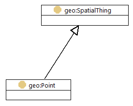

This document advises on best practices related to the publication and usage of spatial
data on the Web; the use of Web technologies as they may be applied to location.
The best practices are intended for practitioners, including Web developers and geospatial
experts, and are compiled based on evidence of real-world application. These best practices
suggest a significant change of emphasis from traditional Spatial Data Infrastructures by
adopting an approach based on general Web standards. As location is often the common factor across multiple
datasets, spatial data is an especially useful addition to the Web of data.
The editors would like to thank everyone for their feedback, to encourage participation in a final review and for OGC members to register their votes and feedback.
For OGC: This is a Public
Draft of a document prepared by the Spatial Data on the Web Working Group (SDWWG) - a joint W3C-OGC
project (see charter). The document is
prepared following W3C conventions. The document is released to solicit public
comment.
Introduction
Increasing numbers of Web applications provide a means of accessing data. From simple
visualizations to sophisticated interactive tools, there is a growing reliance on data. The
open data movement has led to many national, regional and local governments publishing
their data through portals. Scientific and cultural heritage data is increasingly published
on the Web for reuse by others. Crowd-sourced and social media data are abundant on the Web.
Sensors, connected devices and services from domains such as energy, transport,
manufacturing and healthcare are becoming commonly integrated using the Web as a common data
sharing platform.
The Data on the Web Best Practices [[DWBP]] provide a set of recommendations that are
applicable to the publication of all types of data on the Web. Those best practices
cover aspects including data formats, data access, data identifiers, metadata, licensing and
provenance.
Location information, or spatial data, is often a common thread running through
such data; describing how things are positioned relative to the Earth in terms of
coordinates and/or topology.
Within this document our focus is the somewhat broader concern of spatial data; data
that describes anything with spatial extent (i.e. size, shape or position) whether
or not it is positioned relative to the Earth.
Similarly to the challenges identified in [[DWBP]] relating to publishing data on the Web,
and therefore not making use of the full potential of the Web as a data sharing platform,
there is a lack of consistency in how people publish spatial data.
It is not that there is a lack of spatial data on the Web; the maps, satellite and street
level images offered by search engines are familiar and there are many more examples of
spatial data being used in Web applications.
However, the data that has been published is difficult to find and often problematic to
access for non-specialist users. The key problems we are trying to solve in this document
are discoverability, accessibility and interoperability. Our overarching goal is to enable
spatial data to be integrated within the wider Web of data; providing standard patterns and
solution that help solve these problems.
Audience
Our goal in writing this best practice document is to support the practitioners who are
responsible for publishing their spatial data on the Web or developing tools to make it easy
for others to work with spatial data.
We expect readers to be familiar both with the fundamental concepts of the architecture of
the Web [[WEBARCH]] and the generalized best practices related to the publication and usage
of data on the Web [[DWBP]].
We aim to provide two primary pathways into these best practices:
for those already familiar with publishing data on the Web who want to better exploit
the spatial aspects of their data; and
In each case, we aim to help them provide incremental value to their data through
application of these best practices.
This document provides a wide range of examples that illustrate how these best practices
may be applied using specific technologies. We do not expect readers to be familiar with all
the technologies used herein; rather that readers can identify with the activities being
undertaken in the various examples and, in doing so, find relevant technologies that they
are already aware of or discover technologies that are new them.
Scope
Spatial data
All the best practices described in [[DWBP]] are relevant to publication of spatial data
on the Web. Some, such as [[DWBP]] Best Practice 4: Provide data license information
need no further elaboration in the context of spatial data.
However, other best practices from [[DWBP]] are further refined in this document to provide
more specific guidance for spatial data.
The best practices described below are intended to meet requirements derived from the
scenarios in [[SDW-UCR]] that describe how spatial data in commonly published and used on
the Web.
In line with the charter, this
document provides advice on:
The choice of ontology and data format to be used when encoding spatial data;
The use of URIs for identifiers of resources described in spatial data;
The use of metadata to complement spatial data; and
The use of APIs to expose spatial data.
As stated in the charter, discussion of activities relating to rendering spatial data as maps is explicitly out of scope.
The original intent of these best practices was to cover aspects relating to all types of spatial data, for example: the arrangement of cells on a microscope slide; the position of things on the surface of the Earth, the Moon, Mars or other celestial bodies; the position of planets in the solar system etc. However, due to resource limitations these best practices deal almost exclusively with geospatial data; data about things that are implicitly or explicitly located relative to the Earth. That said, many of the best practices are applicable to wider spatial data concerns. In the remainder of the document, we simply refer to spatial data for brevity.
We extend [[DWBP]] to cover aspects specifically relating to spatial data,
introducing new best practices only where necessary. In particular, we consider the
individual resources, or Spatial Things, that are described within a dataset.
Data publication
In this document, we focus on the needs of data publishers and the developers that provide tools for them. That said, we recognize that value can only be gained from publishing the spatial data when people use it! Although we do not directly address the needs of those users, we ask that data publishers and developers reading this document do not forget about them; moreover, that they always consider the needs of users when publishing spatial data or developing the supporting tools. All our best practices are intended to provide guidance about the publishing spatial data to improve ease of use.
Neither the wider topic of spatial data management nor Spatial Data Infrastructures are covered. We assume that your spatial data already exists and will be available from one of the following places:
plain text documents; e.g. historical texts, government reports, blog posts etc.
data files containing structured content or markup; e.g. geospatial vector data in Shapefile or [[GML]] format, statistical data in tabular CSV format or a spreadsheet, as GPX data with “waypoints” and “tracks”, satellite imagery in GeoTIFF, climate simulations in CF-NetCDF etc.
a data repository; e.g. PostGIS (a spatially enabled relational database), Elasticsearch (a document-oriented noSQL repository based on Apache Lucene), Apache Jena’s TDB (an RDF triple store)
exposed via an existing API; including OGC-compliant Web services such as WFS [[WFS]] and WCS [[WCS]]
If your spatial data is managed within a software system it is likely that you will be able to access that data through one or more of the methods identified above; as structured data from a bulk extract (e.g. a “data dump”), via direct access to the underpinning data repository or through a bespoke or standards-compliant API provided by the system.
Each of the four starting points outlined above have their own challenges, but working with plain text documents can be particularly tricky as you will need to parse the natural language to identify the spatial things and their properties before you can proceed any further. Natural Language Processing (NLP) is a complex topic in its own right and is beyond the scope of this best practice document. We will assume that you’ve already completed this step and have parsed any plain documents into structured data records of some kind.
Best practice criteria
The best practices described in this document are compiled based on evidence of real-world
application in production environments. By ‘production environment’ we mean a case where spatial data has been delivered on the Web with the intention of being used by end users and with a quality level expected from such data. In contract, a “testing environment” is published with the intent of being tested so that bugs can be discovered and fixed, and an experimental publication of spatial data on the Web is published with the intent of, for example, exploring possibilities, learning about the technology, or other goals besides publishing with the intent of serious use of the data. Where the Working
Group have identified issues that inhibit the use or interoperability of spatial data
on the Web, yet no evidence of real-world application is available, the editors present
these issues to the reader for consideration, along with any approaches recommended by the
Working Group. Such recommendations are clearly distinguished as such to ensure
that they are not confused with evidence-based best practice.
The normative element of each best practice is the intended outcome. Possible
implementations are suggested and, where appropriate, these recommend the use of a
particular technology.
We intend this best practice to be durable; that is that the best practices remain relevant
for many years to come as the specific technologies change. However, to provide
actionable guidance, i.e. to provide readers with the technical information they need to get
their spatial data on the Web, we try to balance between durable advice (that is necessarily
general) and examples using currently available technologies that illustrate how these best
practices can be implemented. We expect that readers will continue to be able to derive
insight from the examples even when those specifically mentioned technologies are no longer
in common usage, understanding that technology ‘y’ has replaced technology ‘x’.
Privacy considerations
There are many situations where the location of a person is very useful; from using a taxi hailing service to geocoding a selfie. Technology makes this location information easy to collect and share. However, spatial data has particular characteristics which makes its use potentially more complex. For example, a single location of an anonymous tracked mobile phone may cause few privacy concerns, however the same phone tracked over a few days could provide enough information to make the identification of its user possible. Like all personally identifiable information, great care must be taken as the collection, management and security of such information is the subject of legal frameworks. We do not attempt to provide guidance as to legal aspects of storing potentially personally identifiable spatial information, expert legal advice should be obtained. In summary: legal and privacy considerations relating to spatial data are out of scope.
Best Practices Summary
This document contains a variety of best practices related to the publication and usage of spatial data on the Web. First, it continues with several more in-depth introductions on spatial things and geometry, coveragess, spatial relations, coordinate reference systems, linked data, and Spatial Data Infrastructures. Then it describes how these best practices can be used, depending on your starting point and context. After that, the best practices themselves are described. They are about metadata, quality, versioning, identifiers, vocabularies, (API) access, linking, and large datasets.
The following best practices can be found in this document:
Namespaces
The following namespace prefixes are used within this document. Use of a namespace does not imply endorsement of the associated data platform or vocabulary.
This terse definition is a little confusing, so let’s unpack it.
Firstly, it talks about “real world phenomena”; that’s everything from highways to
helicopters, parking meters to postcode areas, water bodies to weather fronts and more.
These can be physical things that you can touch (e.g. a phone box) or an abstract concept
that has spatial extent (e.g. a postcode area). Features can even be fictional (e.g.
“Dickensian London”) and may even lack any concrete location information such as the
mythical Atlantis.
The key point is that these “features” are things that one talks about in the universe
of discourse - which is defined in [[ISO-19101]] as the “view of the real or hypothetical world that includes
everything of interest”.
Secondly, the definition of feature talks about “abstraction”. Take the example of Eddystone Lighthouse. A helicopter pilot
might see it a “vertical obstruction” and be interested in attributes such as its height and
precise location. Whereas a sailor may see it as a “maritime navigation aid” and need
information about its light characteristic and general location. Depending on one’s set of
concerns, only a subset of the attributes of a given “real world phenomenon” are relevant.
In the case of Eddystone Lighthouse, we defined two separate “abstractions”. As is common
practice in many information modelling activities, the common sets of attributes for a given
“abstraction” are used to define classes. In the parlance of [[ISO-19101]], such a class is known as “feature
type”.
Although the exact semantics differ a little, there is a good correlation between the
concept of “feature type” as defined in spatial data standards and the concept
of “class” defined in [[RDF-SCHEMA]]. The former is an information modelling construct that
binds a fixed set of attributes to an identified resource, whereas the latter defines the
set of all resources that share the same group of attributes.
When combined with the open-world assumption embraced by [[RDF-SCHEMA]] and the Web
Ontology Language (OWL) [[OWL2-OVERVIEW]], the set-based approach to classes provides more
flexibility when combining information from multiple sources. For example, the “Eddystone
Lighthouse” resource can be seen as both a “vertical obstruction” and a
“maritime navigation aid” as it meets the criteria for membership of both sets.
Conversely, this flexibility makes it much more difficult to build software applications
as there is no guarantee that an information resource will specify a given attribute. Web
standards such the Shapes Constraint Language [[SHACL]] are being defined to remedy this
issue.
However, the term “feature” is also commonly used to mean a capability of a system, application or component. Also, in some domains and/or applications no distinction is made between "feature" and the corresponding real-world phenomena.
To avoid confusion, we adopt the term “spatial thing” throughout the remainder of this best practice document. “Spatial thing” is defined in [[W3C-BASIC-GEO]] as “Anything with spatial extent, i.e. size, shape, or position. e.g. people, places, bowling balls, as well as abstract areas like cubes”.
The concept of “spatial thing” is considered to include both "real-world phenomena" and their abstractions (e.g. “feature” as defined in [[ISO-19101]]). Furthermore, we treat it as inclusive of other commonly used definitions; e.g. Feature from [[NeoGeo]], described as “A geographical feature, capable of holding spatial relations”.
A spatial thing may move. We must take care not to oversimplify our concept of spatial thing by assuming that it is equivalent to definitions such as Location (from [[DCTERMS]]) or Place (from [[SCHEMA-ORG]]), which are respectively described as “A spatial region or named place” and "Entities that have a somewhat fixed, physical extension".
Looking more closely, it is important to note that geometry is typically a property of a spatial
thing.
In fact, this is only one geometry that may be used to describe Eddystone Lighthouse. Other geometries might include a 2D polygon that defines the footprint of the lighthouse in a horizontal plane and a 3D solid describing the volumetric shape of the lighthouse.
Furthermore, these geometries may be subject to change due to, say, a resurvey of the lighthouse. In such a situation, the geometry object would be updated- but the spatial thing that we are talking about is still Eddystone Lighthouse. Following the best practices presented below, we use a HTTP URI to unambiguously identify Eddystone Lighthouse: https://www.trinityhouse.co.uk/lighthouses-and-lightvessels/eddystone-lighthouse.
Sometimes spatial things, such as The Sahara, have imprecisely defined locations. These are still considered to spatial things as they have spatial extent — it's just that we can't define a crisp vector boundary for them because there's no consensus about where there edges are. In such cases, often a single point is given that provides the notional centre-point of the spatial thing.
Although we have borrowed the description of spatial thing from [[W3C-BASIC-GEO]], the formal [[RDF-SCHEMA]] definition of w3cgeo:SpatialThing doesn't quite suit our purpose as there is the potential for confusion about whether it is disjoint from geometry. The definition of geosparql:Feature, which is derived from the [[ISO-19109]] definition of Feature, is a better semantic fit for spatial thing as it is explicity specified as being disjoint from geosparql:Geometry.

The main classes from [[W3C-BASIC-GEO]] and [[GeoSPARQL]] compared - pseudo-UML notation. The red arrow indicates 'disjoint classes'.
Coverages: describing properties that vary with location (and time)
Many aspects of spatial things can be described with single-valued, static properties. However, in some applications it is more useful to describe the variation of property values in space and time. Such descriptions are formalized as coverages. Users of spatial information may employ both viewpoints.
So what is a coverage? As defined by [[ISO-19123]] it is simply a data structure that maps points in space and time to property values. For example, an aerial photograph can be thought of as a coverage that maps positions on the ground to colors. A river gauge maps points in time to flow values. A weather forecast maps points in space and time to values of temperature, wind speed, humidity and so forth. One way to think of a coverage is as a mathematical function, where data values are a function of coordinates in space and time.
Sometimes you’ll hear the word “coverage” used synonymously with “gridded data” or “raster data” but this isn’t really accurate. You can see from the above paragraph that non-gridded data (like a river gauge measurement) can also be modelled as coverages. Nevertheless, you will often find a bias toward gridded data in discussions (and software) that concern coverages.
Although the definition above presents a coverage as a data structure, conceptually it still has spatial extent. For example, the distribution of rainfall measured by a weather radar can be thought of as a coverage — the spatial extent is defined by the limit of the weather radar's range. Similarly, we might say in the hydrology example, where a river gauge measures flow values at regular sampling times, the spatial extent would be the monitoring point where the river guage is positioned.
We say that a coverage is really just a special type of spatial thing with some particular properties. Often, a coverage can be a property of another spatial thing; referring back to hydrology, a "river segment" may have a property “flow rate” that is expressed as a coverage.
signals in coverages may be used to provide the evidence for the existence, location and type of spatial things; for example, within a geophysical borehole the variation in soil/rock type may be used to infer the presence of particular rock-units at underground locations
as the property value of a spatial thing whose value varies within the extent of that spatial thing; for example, the varying strength of mobile-network coverage throughout the UK
the values of a common property for a distributed set of spatial things provide a discrete sampling of a coverage; for example, the measurement of soil moisture based at a set of sampling stations can be compiled to show the spatial variation of soil moisture across the region where the sampling stations are located
A coverage can be defined using three main pieces of information:
The domain of the coverage is the set of points in space and time for which we have data values. For example, in a river gauge measurement, the domain is the set of times at which the flow was measured. In a satellite image, the domain is the set of pixels. In a weather forecast, the domain is a set of grid cells.
The range of the coverage is the set of measured, simulated or observed data values. A single coverage may record values for lots of different quantities; for example, a weather forecast predicts values for many things (temperature, humidity etc.) on the same domain. So the range of a coverage often consists of several lists of data values, one for each measured variable. Each element within each list corresponds with one of the elements of the domain (e.g. a pixel or grid cell).
The range metadata describes the range of the coverage, to help users to understand what the data values mean. This may include links to definitions of variables, units of measure and other bits of useful information.
Usually, the most complex piece of information in the coverage is the definition of the domain. This can vary quite widely from coverage type to coverage type, as the list above shows. For this reason, coverages are often defined by the spatiotemporal geometry of their domain. You will hear people talking about “multidimensional grid coverages” or “time-series coverages” or “vertical profile coverages” for example.
Spatial relations
A spatial relation specifies how an object is located in space in relation to a reference
object. Commonly used types of spatial relations are: topological, directional and distance
relations.
Topological relations describe the relationships between geometric objects that
are invariant to rotation, translation and scaling. As such, topological relations can
support qualitative spatial reasoning without reference to the geometries themselves; for
example, to assert that object A touches object B. These relations, also known as “spatial
predicates”, include concepts such as: equals, disjoint, intersects, touches, within,
contains, overlaps and crosses.
Directional relations specify the relative direction between object and
reference. Examples include: left, in front of and astern.
Distance relations specify how far the object is from the reference object.
Examples include: at, nearby and far away.
Coordinate Reference Systems (CRS)
One of the most fundamental aspects of publishing spatial data, data about location, is how to express and share the location in a consistent way. In many cases where you are publishing data for use by the wider Web community the use of latitude and longitude coordinates (Lat and Long) is most appropriate. As Latitude and longitude coordinates are global they are well suited to many applications: perfect for locating your favorite coffee shop, geocoding a photograph or capturing an augmented reality Pokemon hiding in your local park. Of course, the accuracy is dependent on the equipment used measure that position; GPS-enabled consumer devices are accurate to within a few meters.
It is worth noting that the precision with which coordinate positions are reported often do not reflect the accuracy of the measurement. For example, latitude and longitude reported to six decimal places corresponds to a precision of around 1cm on the ground. Such accuracy can only be achieved with professional equipment, yet a lot of software defaults to use of six, seven or even more decimal places when expressing coordinate positions which may mislead users to thinking that the data is more accurate than it actually is!
As with everything to do with spatial data, things can get more complicated. One of the most common problems occurs because not all Coordinate Reference Systems (CRS) agree how to express latitude and longitude coordinates. Some CRS order the coordinates Lat/Long while others use Long/Lat; some use decimal degrees while others use degrees, minutes and seconds (dms). Axis order mistakes can mean the difference between, say, a position in the Netherlands or somewhere in Somalia, while encoding coordinates in decimal degrees when dms is expected can lead to positional errors on the kilometer scale.
Therefore, it is very important to provide explicit information to your users about how coordinates are encoded. For example, this snippet of results from the Google Geocoding API makes explicit which is the latitude and which is the longitude coordinate.
Users of spatial data are often interested in the third dimension too: vertical elevation (or altitude). For most situations, we can consider elevation to be the vertical distance above (or below) mean sea level. The elevation is most often expressed in meters (but this can vary between CRS definitions) and is provided as a third value in a coordinate position.
The following is a little more technical; and in most cases this should only be for information.
Latitude, longitude and elevation measurements express a position on the surface of the Earth. But to define this position we need to state where we are making the measurements from (e.g. the equator, the prime meridian and the approximated surface of the Earth, or geoid) and consider the shape of the earth (a flattened sphere with lumps and bumps, but for convenient mathematical operations, usually approximated to an ellipsoid). This information is used to define the geodetic datum which provides the basis of every coordinate reference system.
Where your geospatial data has geometries defined as points, lines and polygons (i.e. vector data), publishing in the World Geodetic System 1984 (WGS 84) Coordinate Reference System will help people to integrate data with mass-market Web applications, tools and libraries, thereby increasing the usefulness of that data for a large community of potential users. Also, since WGS 84 is also used by the GPS system, it's handy for all those mobile Apps!
Most people can stop reading now, but of course there are going to be a few cases where WGS 84 is not appropriate.
In many parts of the world location data has been collected using local coordinate systems that are specific to particular countries or regions. These local coordinate systems may use projected measurements defined on a flat, two-dimensional surface (which are easier to use for calculating distances than angular measurements and are essential when making topographic maps).
Users of spatial data should be aware that projected coordinate systems distort distances and angular measurements and accordingly affect how the true size of countries of countries and other large-scale entities is perceived. CNN explore some of the challenges relating to map projections in their article What's the real size of Africa?.
So, it may be that you have information in a projected CRS, rather than global latitude and longitude - what should you do? You can publish data as is in one of these many projected CRS, but you need to tell users which particular CRS is being used. A good directory of Coordinate Reference Systems is maintained by the International Association of Oil and Gas Producers: the EPSG Geodetic Parameter Dataset.
It is common for a CRS to be described by its EPSG code. For example, 2-dimensional WGS 84 (Lat/Long) is EPSG:4326, 3-dimensional WGS 84 (Lat/Long/Elevation) EPSG:4979 and OSGB 1936 / British National Grid (a national projected CRS, based on the OSGB 1936 datum) is EPSG:27700.
The authoritative source of CRS definitions is the EPSG registry. Those definitions are also available from the Open Geospatial Consortium CRS Register. Other Web services like Spatial Reference and EPSG.io also provide definitions as used in popular software, but those definitions — especially the ones published in Well Known Text (WKT) version 1 format — sometime differ from official EPSG definitions in axis order and units of measurement.
You can re-project your coordinates to WGS 84 using many available tools online. So, for example, the location at 516076, 170953 in British National Grid (EPSG:27700) coordinates is -0.331841, 51.425708 in WGS 84 Long/Lat. This conversion is a useful step as it makes you data more accessible to global users. So, if you can do so, it is helpful to publish data in both local (projected) and global coordinates.
However, given that satellite imagery is comprised of data pixels projected onto a flat surface (i.e. raster data), it is commonplace for raster-type spatial data to expressed in a projected coordinate reference system to avoid the unnecesary (and potentially costly) conversion of pixel positions to angular measurements. Web-Mercator (EPSG:3857), a global projected CRS, is used in the majority of Web-mapping applications and has therefore become the defacto Web-standard CRS for publishing raster data.
Re-projecting to a better-known CRS is often a necessary step if you are publishing data in the form of engineering or Computer Aided Design (CAD) drawings of a new building or road layout for example. Usually these drawings are made using a very local coordinate reference system for the site itself, so the data will need to be reprojected to “fit” with existing data.
So, we are now at the point where almost everyone publishing spatial data on the Web can stop reading. But for those with specific requirements concerning high precision locations, there are a few more topics that need to be mentioned.
If you need to be able to measure in terms of a few centimeters or less then things are more complicated. With this level of precision required you need to consider a more sophisticated model of the shape of the Earth and consider plate tectonics.
For these more complex use cases other reference systems with alternative geodetic datums are used. The geodetic datum can be thought of as the model of the Earth's surface over which the coordinate reference system is applied. Different datums use different models for the precise shape and size of the Earth to provide more accurate horizontal or vertical measurements at different positions on the globe (because depending on your location, different ellipsoids will provide a better approximation of the local Earth's surface - but this is at the expense of a poorer match elsewhere).
While WGS 84 provides a reasonable fit at all points on the Earth's surface, many other datums are defined for improved fit within a regional or national area. For example, in Europe a system called ETRS89 (EPSG:4258) can be used instead of WGS 84, while in North America a similar system called NAD-83 (EPSG:4269) is used. So, it might be that you have measurements made using these reference systems. Here the best practice is once more to be explicit in describing the CRS used, but also to be careful re-projecting to different systems as required accuracy may be lost.
Finally, another issue is that points on the surface of the earth are actually moving relative to the coordinate system, due to geologic processes. You may think this is of interest only to geologists, but when I tell you that Australia has moved around 1.5m since the framework was last reset 20 years ago, and remind you that we are entering the age of self-driving cars, then you will probably think again. Re-calculating the datum from time to time, or maybe continuously such as in the case of the dynamic New Zealand Geodetic Datum (NZGD2000), really does matter for some applications. See Best Practice 7: Choose coordinate reference systems to suit your user's applications for more information.
Detailed discussion of coordinate reference system definitions themselves is beyond the scope of this best practice document. Should this topic be of interest, please refer to specialist documentation such as [[OGC-TOPIC-2]] / [[ISO-19111]].
Linked Data
The term ‘Linked Data’ refers to an approach to publishing data that puts linking at
the heart of the notion of data, and uses the linking technologies provided by the Web to
enable the weaving of a global distributed database. By naming real world entities - be they
Web resources, physical objects such as the Eiffel Tower, or even more abstract things such
as relations or concepts - with URLs data can be published and linked in the same way Web
pages can. [[LDP-PRIMER]]
★ make your stuff available on the Web (whatever format)
under an open license
★★ make it available as structured data (e.g., Excel
instead of image scan of a table)
★★★ make it available in a non-proprietary open
format (e.g., CSV as well as of Excel)
★★★★ use URIs to denote things, so that
people can point at your stuff
★★★★★ link your data to other data
to provide context
We think that the concept of Linked Data is fundamental to the publishing of spatial
data on the Web: it is the links that connect data together that are the foundational
to the Web of data.
These best practices promote a Linked Data approach.
Sources such as the Best Practices for Publishing Linked Data [[LD-BP]] assert a strong
association between Linked Data and the Resource Description Framework (RDF)
[[RDF11-PRIMER]]. Yet we believe that Linked Data requires only that the formats used to
publish data support Web linking (see [[WEBARCH]] section 4.4 Hypertext). 5 Star Data (based on [[5STAR-LOD]])
asserts only that data formats be open and non-proprietary (★★★); and
infers the need for data formats to support use of URIs as identifiers
(★★★★) and Web linking (★★★★★).
In fact, our approach to linked data is well described by an alternative 5-star scheme from [[WEB-DATA]]:
★ Linkable: use stable and discoverable global identifiers
★★ Parseable: use standardized data metamodels such as CSV [[RFC4180]], XML [[XML11]], RDF [[RDF11-PRIMER]], or JSON [[RFC7159]].
★★★ Understandable: use well-known or at least well-documented vocabularies/schemas
★★★★ Linked: link to other resources whenever possible
★★★★★ Usable: label your document with a license
Within this document, we include examples that use RDF and related technologies such
as triple stores and SPARQL [[SPARQL11-OVERVIEW]]
because we see evidence of its use in real world
applications that support Linked Data. However, we must make clear to readers that
there is no requirement for all publishers of spatial data on the Web to embrace the wider
suite of technologies associated with the Semantic Web; we recognize that in many cases, a
Web developer has little or no interest in the toolchains associated with Semantic Web due
to the addition of complexity to any Web-centric solution.
Although we think that Linked Data need not necessarily require the use of
RDF, it is probably the most commonly representation. We note that [[JSON-LD]] provides a bridge
between those worlds by providing a data format that is compatible with RDF but relies on
standard JSON tooling.
Furthermore, as the examples in this document illustrate, we often see a ‘hybrid’ approach
being used in real-world applications; using RDF to work with graphs of information
that interlink resources, while relying on other technologies to query and process the
spatial aspects of that information for performance reasons.
Why are traditional Spatial Data Infrastructures not enough?
Finding, accessing and using data disseminated through spatial data infrastructures
(SDI) based on OGC Web services is difficult
for non-expert users. There are several reasons, including:
In spatial data infrastructures, catalog services are intended to be used for
discovering spatial assets, not the general-purpose search engines of the Web. OGC Web services do not address indexing of
their content by those search engines.
By design, the catalog services only provide access to metadata - and in general
metadata that is focused on the needs of expert users - not the data itself.
Users cannot just “follow links” to access data, it is typically necessary to construct
some kind of query to access data. Often these queries are complex to define, requiring in
depth knowledge both data structure and the domain-specific query language.
In addition, it is often difficult for non-expert users to understand and use the data.
Part of this are domain-specific complexities that are difficult for non-experts (e.g.,
handling of coordinates in different coordinate reference systems), but hard to avoid
entirely. But the datasets often address requirements of expert communities with diverse
needs, resulting in comprehensive, but complex specifications that cover many edge cases,
too. And the data is typically available in formats that are not easy to process for
non-expert users.
However, spatial data infrastructures are a key component of the broader spatial data ecosystem. Such infrastructures typically include policies, workflows and tools related to the management and curation of spatial datasets, and provide mechanism to support the rich set of capabilities required by the expert community. Our goal is to help spatial data publishers build on these foundations to enable the spatial data from SDIs to be fully integrated with the Web of data.
The rest of the best practices provide more detail on specific aspects of publishing spatial data on the Web, such as metadata, geometries, CRS information, versioned data, and so on.
The Best Practices
Web principles for spatial data
Spatial data, like any other data, should be published on the Web. By this we mean more than providing spatial data file downloads or services; for data to be on the Web, the resources it describes need to be identified using HTTP URIs, be published in such a way that they are indexable by search engines, and be connected, or linked, to other resources. This makes the data easy to find and easy to access for non-specialist users: the spatial data becomes integrated within the wider Web of data.
Deciding whether your spatial data is a single dataset or not is somewhat arbitrary. To decide this, it is often useful to consider attributes such as the license under which the data will be made available, the refresh or publication schedules, the quality of the data and the governance regime applied in managing the data. Typically, all of these attributes should be consistent within a single dataset.
[[VOCAB-DCAT]] provides a useful definition of dataset that supports this approach: “A collection of data, published or curated by a single agent, and available for access or download in one or more formats.”
However, we need to look inside the datasets at the resources described within your data. If you want these resources to be visible within the Web’s information space, by which we mean that others can refer to or talk about those resources, then they must also be assigned URIs (see [[DWBP]] Best Practice 10: Use persistent URIs as identifiers within datasets). These URIs are like 'Web-scale foreign keys' that enable information from different sources to be stitched together.
The primary topics of any spatial dataset are spatial things — anything from physical things like people, places and post boxes to abstractions such as administrative areas. Each spatial thing will be described by a set of attributes and usually at least one geometry. How your spatial data is structured will depend on the vocabulary or data model you use (see for further details on vocabulary choice). This will determine the types of entities that, along with the spatial things themselves, are important enough to be given identifiers so that statements can be made about them. Geometry objects are an example of an entity that is often assigned a unique identifier so that they can be referenced or reused.
Given the widespread use of the Hyper Text Transfer Protocol (HTTP) on the Web, we SHOULD use HTTP URIs to identify resources in spatial data.
This is a fundamentally different approach to that of typical data publication today — where the dataset is (often) globally identified, but individual spatial things, or "features" in SDI parlance, are assigned local identifiers which may, or may not, be persistent.
We consider identifiers in the Web’s information space to be unaffected by the choice to serve HTTP content securely or not. For example, http://example.org/country/suriname and https://example.org/country/suriname both identify the same spatial thing - in this case the South American country of Suriname.
Use globally unique persistent HTTP URIs for spatial things
Use stable HTTP URIs to identify spatial things, re-using commonly used URIs where they exist and it is appropriate to do so.
Why
To publish spatial data on the Web, we need to stitch the spatial things and their corresponding entities into the Web’s information space; contributing to the Web of data. First: [[WEBARCH]] Good Practice: Identify with URIs states that "agents should provide URIs as identifiers for resources". Second: the 5 Star Data scheme states: "★★★★ use URIs to denote things, so that people can point at your stuff".
Resources identified with HTTP URIs can be specified as the target of links within the Web’s global information space, enabling information to be related, combined and referred to. This is the fundamental basis of 5★ Linked Data: "★★★★★ link your data to other data to provide context".
The HTTP URIs used to identify spatial things need to be stable or persistent so that relationships that link them to other resources don’t break.
Intended Outcome
Spatial things become part of the Web’s global information space enabling them be linked with other spatial things and other resources and for those links to be durable. In other words, spatial data becomes part of the Web of Data.
Seek and reuse existing URIs, ensuring that the URIs are persistent and they are published by a trusted group or organization; or
Create your own persistent URIs.
However, we need to look a little more closely at how and where to apply that guidance.
The Web of data is made up of subjects and objects; the things we talk about and the things we refer to. For example, we could say that Anne Frank's House (the subject) is within the Municipality of Amsterdam (the object). In RDF [[RDF11-PRIMER]], this looks like:
When considering HTTP URIs for objects (e.g. the target of our hyperlinks) it makes sense to reuse existing identifiers. After all, you are trying to stitch your spatial data into the Web so that we can "link your data to other data" and achieve a ★★★★★ rating! Organizations such as DBPedia, GeoNames and government mapping and cadastral authorities (that publish national registers of addresses, buildings, etc.) are good sources of stable, authoritative URIs. The steps described for discovering existing vocabularies [[LD-BP]] can be readily adapted to find more. For more details about how you might link to these authoritative identifiers, see .
However, HTTP URIs for subjects (e.g. the resource that we want to make statements about) can be trickier. If you are working purely with data then you can reuse existing URIs minted by other authorities for your subject URIs. But publishing spatial data on the Web means that the URIs for each spatial thing should dereference to Web pages or data resources that provide useful information (see ). An HTTP request will be directed to a host Web server, identified by the internet domain name (or IP address) in the requested URI. If you use a URI with an internet domain name where you have no control over how the Web server behaves, then there is no way for your statements to be included in the Web server's response.
To take control of how information about spatial things is presented, data publishers need to assign their subject spatial things HTTP URIs from an internet domain name where they have authority over how the Web server responds. Typically, this means minting new HTTP URIs. It's all worth considering that the use of a particular internet domain may reinforce the authority of the information served. For example, a URI for Anne Frank's House is: https://monumentenregister.cultureelerfgoed.nl/monuments?MonumentId=4296. The use of the internet domain registered to the Cultural Heritage Agency of the Netherlands gives the definition authenticity.
The need to control what information is provided about a given spatial thing means that it is not uncommon for a spatial thing to be identified by multiple HTTP URIs. The equality between two URIs that refer to the same resource can be stated using a property such as owl:sameAs. Care must always be taken when using owl:sameAs to determine that the two URIs actually refer to the same resource, rather than two resources that are similar. Warning: don't say if you're not sure it's true!
For more information about the types of properties that can be used to link between spatial things, and between spatial things and other resources, see .
When minting your own URIs, [[DWBP]] Best Practice 10: Use persistent URIs as identifiers within datasets cites the advice from GS1's SmartSearch Implementation Guideline [[GS1]] which suggests that your URIs should include the type of resource that is being identified to help human readability. Also, given the need for the HTTP URIs for spatial things to be used throughout their lifetime (and perhaps beyond) you should give some thought to designing a URI that is persistent.
When an HTTP URI is dereferenced, the server will respond with a sequence of bytes: by its nature, HTTP can only serve information resources such as Web pages or JSON [[RFC7159]] documents. Yet a spatial thing is actually a real or conceptual phenomenon - a lake is made from water not information! Using a single URI to refer to both the spatial thing and the page/document that describes the spatial thing introduces a URI collision. This can impose a cost in communication due to the effort required to resolve ambiguities. [[URLs-in-data]] has more to say on this subject, including recommending URI design patterns that enable differentiation between the spatial thing and the page/document that describes it.
However, in most cases using a single URI for both spatial thing and the page/document is simpler to implement and meets the expectations of most end-users. As stated in [[WEBARCH]] section 2.2.3 Indirect Identification, identifiers are commonly used in this way. There is no obligation to distinguish between the spatial thing and the page/document unless your application requires this.
This statement is clearly not true; an ancient monolith covering more than 3 km2 cannot be provided in XML [[XML11]]!
HTTP URIs for spatial things should not include any indication of the data format used to encode the page/document as this may change as your systems evolve. That said, you may wish to provide a set of complementary resources that specify a particular format as part of your content negotiation strategy. For example, the URI http://sws.geonames.org/7645281/about.rdf dereferences to provide an RDF/XML encoding of the information about Uluru in the Northern Territory of Australia (http://sws.geonames.org/7645281/).
[[DWBP]] Best Practice 10: Use persistent URIs as identifiers within datasets notes that URIs can be long. You may need to define identifiers that are locally unique within your spatial dataset and provide a mechanism to programmatically convert each local identifier to a URI. For example, the Metadata Vocabulary for Tabular Data [[TABULAR-METADATA]] achieves this using URI Templates as described in [[RFC6570]].
It is also good practice to use a redirection service to hide complex and potentially changing service end-point URLs, such as for a Web Feature Service [[WFS]] behind well-designed URIs. This means that users don’t need to be aware of the complexities of the API or changes in endpoint URIs or API versions to request information about a particular spatial thing. For example, the URI http://data.example.org/aan/id/perceel/aan.2528 could be used as proxy for the WFS GetFeature request http://geodata.nationaalgeoregister.nl/aan/wfs?VERSION=2.0.0&SERVICE=WFS&REQUEST=GetFeature&RESOURCEID=aan.2528.
Finally, while it is simple to use a query-pattern URL to serve information about a resource identified with a URI from a third-party internet domain, e.g. http://example.org/museums?q=http://sws.geonames.org/6618987/, these URLs are unsuitable as persistent identifiers. More often than not, your intended users will dereference the "official" URI, e.g. http://sws.geonames.org/6618987/. That said, this kind of search operation does provide a useful mechanism to find particular spatial things. See Best Practice 12: Expose spatial data through 'convenience APIs' for further details.
How to Test
Check that within the data spatial things, such as countries, regions and people, are referred to by HTTP URIs or by short identifiers that can be converted to HTTP URIs. Ideally dereferencing the URIs should return the spatial thing, however, they have value as globally scoped variables whether they dereference or not.
Search engines are the common starting point for people looking for content on the Web. However, as far as search engines are concerned, something is only 'on the Web' if it has an HTTP URI and when this URI is dereferenced, information is returned (usually in the form of a Web page).
Make your spatial data indexable by search engines
Search engines should be able to crawl spatial data on the Web and index spatial things for direct discovery by users.
Why
In SDIs information about spatial datasets is published as authoritative metadata records and collated in Web-based catalogues. This approach causes several problems:
the catalogues are often designed to primarily support expert users - people may not even be aware of their existence;
once you have discovered a dataset that meets your needs and identified where it is available from, a second step is required to access the data itself - often requiring the use of unfamiliar protocols or complex API requests; and
the data itself is not indexed - discovery relies on the metadata records that are often sparsely populated or out of date.
Search engines are the common starting point for people looking for content on the Web that is widely understood. By publishing spatial data in a way that enables their crawlers to index spatial datasets including each spatial thing, the fidelity of search results should improve. Users will be able to directly search for specific entities rather than having to look for a dataset and then parse through it; e.g. to search for "Anne Frank’s House" (https://g.co/kg/m/02s5hd) rather than looking for a dataset about "Cultural Heritage in Amsterdam" and hoping that it contains a reference to what you’re interested in.
At present, spatial information is not widely exploited by search engines. However, by increasing the volume of spatial information presented to search engines, and the consistency with which it is provided, we expect search engines to begin offering spatial search functions. We already see evidence of this in the form of contextual search, such as prioritization of search results from nearby entities. In addition, search engines are beginning to offer more structured, custom searches that return only results that include certain [[SCHEMA-ORG]] types, like Dataset, Place or City.
Intended Outcome
Information about spatial datasets and things is indexed by search engines.
Users can find spatial things using common search engines.
Possible Approach to Implementation
In general, you need to:
publish a HTML Web-page for the spatial dataset and each spatial thing that it describes; and
make sure that those pages can be crawled.
The Web-page for the dataset is an entry-point for humans to browse and for the search engines to crawl your data. This landing page should provide descriptive metadata that helps users evaluate whether the dataset meets their needs (see Best Practice 13: Include spatial metadata in dataset metadata and [[DWBP]] Best Practice 2: Provide descriptive metadata), and may provide links to other service end-points, APIs or tools that will help a user work with the dataset. When metadata for datasets has already been created, e.g. to create a record in a metadata catalogue or to describe the data available from a service end-point, this information should be re-used - publishing it in a Web-friendly way that humans and Web-crawlers can consume. The landing page should be indexable by the search engines so that it can be discovered too!
To enable humans and Web-crawlers to find HTML pages for the spatial things, the "landing page" needs to include hyperlinks that can be followed. Where you have a larger collection of spatial things, you should support paging through the collection.
You may also consider using Sitemaps to direct the Web-crawler. For larger datasets, multiple sitemaps can be provided and grouped by a sitemap index file. If a dataset contains millions of spatial things (e.g. a building dataset with national coverage), generating and maintaining the sitemaps may require a custom implementation to keep the sitemaps with the set of spatial things synchronized.
For very large datasets paging through thousands of pages is not useful for a human either. Consider supporting filtering and/or organize the spatial things into subsets, as described in .
A pre-condition for this best practice is Best Practice 1: Use globally unique persistent HTTP URIs for spatial things as persistent identifiers are essential to support reliable indexing and linking. Traditionally spatial datasets have not been maintained with stable identifiers for spatial things, but to share spatial data on the Web stable identifiers are a must. Sharing spatial data is more than "just" making the dataset available on the Web.
Each Web-page, and the hyperlinks used to relate the spatial things to the dataset landing page, can likely be generated programmatically from the data you hold about the spatial thing, either directly from the data or by using an API that makes the data available on the Web.
It is important to keep in mind that the HTML representations should not mainly be designed for the search engines, but they should present the data in a clear and understandable way to human users. The page about the spatial thing should be useful to a user and encourage others to link to the page when they share other information about the spatial thing. This typically will also improve the ranking of these pages in search results.
In addition to exposing the spatial data as linked HTML Web-pages, indexing by Web-engines can be further enhanced by incorporating a description of the spatial thing as structured markup (in particular [[MICRODATA]] or [[JSON-LD]] annotations using [[SCHEMA-ORG]]) as this enables the search engines to make more detailed assumptions about your resource. It is important to note that this is not only helpful to search engines, but also to other tools that want to understand more about the semantics of the resource, for example, its location.
In [[SCHEMA-ORG]], a spatial dataset is a Dataset and a spatial thing is in general a Place or an Event. For some types of spatial things, more specific sub-types exist, for example City or Mountain.
By using [[SCHEMA-ORG]] annotations, search engines and others can connect location information with other information, e.g. about the nature of the spatial thing, opening hours, contact details, etc.
The use of [[SCHEMA-ORG]] for spatial data is in its early days and should be understood as an "emerging practice".
Typically, multiple formats for a resource are supported using two mechanisms: HTTP content negotiation and by adding format-specific file extensions to the resource URI like ".json", ".xml" or ".ttl". Content negotiation is the standard mechanism of HTTP and the format-specific URIs enable the use of clickable links to the resource in a specific format.
Search engines may also index resource representations in other formats than HTML.
The use of [[SCHEMA-ORG]] for describing spatial information is continually evolving; spatial data publishers should familiarize themselves with current practices. A useful Introduction to Structured Data is provided in Google's developer portal.
How to Test
Using a Web browser,
search for the landing page of your dataset, and
check that you can browse to human-readable HTML pages for each spatial thing that the dataset describes.
Monitor the search consoles of the search engines about the progress in indexing your Web-pages and their structured data. In case any errors are reported, try to fix them.
Links, in whatever machine-readable form, are important. In the wider Web, it is links that enable the discovery of Web pages: from user-agents following a hyperlink to find related information to search engines using links to prioritize and refine search results. This section is concerned with the creation and use of those links to support discovery of the SpatialThings described in spatial datasets.
For data to be on the Web, the resources it describes need to be connected, or linked, to other resources. The connectedness of data is one of the fundamentals of the Linked Data approach that these best practices build upon.
Just like any type of data, spatial data benefits massively from linking when publishing on the Web. The widespread use of links within data is regarded as one of the most significant departures from contemporary practices used within SDIs. That's why this topic is included in this Best Practice.
Discussion of links in these best practices are limited to simple links that relate exactly two resources: the source and target. Complex links that relate an arbitrary number of resources, such as described in [[XLINK11]] section 5.1 Extended Links, are out of scope.
Link resources together to create the Web of data
Bind spatial things into the Web of data using links to other resources, providing sufficient information for a user to determine whether the target resource specified in a link will be of use.
Why
The 5★ rating for Linked Open Data asserts that to achieve the fifth star you must "link your data to other data to provide context". The benefits for consumers and publishers of linking to other data are listed as:
You can discover more (related) data while consuming the data.
You can directly learn about the data schema.
You make your data discoverable.
You increase the value of your data.
Your own organization will gain the same benefits from the links as the [other] consumers.
There is always a cost to traversal of a link, even if it is just a few milliseconds delay and the need to parse a few hundred or thousand bytes returned in response to an HTTP request. In many cases, such as when dealing with large datasets and complex queries, the costs incurred from traversing a link may be significant in terms of time and data volumes. Before a user or software agent decides to traverse a link, they should be able to determine whether acquisition of the target resource, or data about the target resource, will support their application goals. For example, what format can one expect the response in, what type of resource is the target and how is that target related to the source resource?
Intended Outcome
Links can be identified and traversed by humans and software agents.
Sufficient information is provided to help humans and software agents determine whether traversal of a given link meets their goals.
Possible Approach to Implementation
The ground-rules for linking spatial data are the same as for any type of data.
Use formats that support Web linking (as defined in [[WEBARCH]] section 4.4 Hypertext)
Earlier in this document () we explained that linked data requires only that the formats used to publish data support Web linking. In other words, linking spatial data does not automatically mean the use of RDF [[RDF11-PRIMER]]; links can also be created, for example, using [[GML]], HTML or [[JSON-LD]]. The two key points from [[WEBARCH]] are:
Good practice: Link identification — A [data format] specification SHOULD provide ways to identify links to other resources [...].
Good practice: Web linking — A [data format] specification SHOULD allow Web-wide linking, not just internal document linking.
The examples used in this best practice illustrate some of the data formats and mechanisms that support Web linking.
Follow the principles for 4★ — Linked [[WEB-DATA]]
Always use global identifiers when linking between documents, so that link identifiers can be taken out of context and shared globally.
Links should be typed (explicitly or implicitly), so that clients can decide which link to follow when they are traversing a Web of interlinked resources to reach application goals.
HTTP/1.1 200 OK
Link: <http://www.gemeentegeschiedenis.nl/gemeentenaam/Amsterdam/2014>; rel="predecessor-version"
Content-type: application/geo+json
Connection: close
{...}
This example, using HTTP Link headers (as defined in [[RFC5988]]), illustrates the use of IANA [[LINK-RELATION-TYPES]] to define the link type. According to the IANA registry, predecessor-versionpoints to a resource containing the predecessor version in the version history (as defined in [[RFC5829]] "Link Relation Types for Simple Version Navigation between Web Resources").
In simple links involving only two resources, the role, or type, of each resource are implicit and can be inferred from the link relation type. It can be useful to include other information to help users judge whether to follow a link such as human-readable labels and hints about the target resource type. Of course, often target resources and the links that refer to them are maintained by different parties, so such hints should be assumed as prescriptive; they may or may not turn out to be true. For example, [[RFC5988]] "Web Linking" defines several additional attributes including: hreflang — hints at the language or languages that the target resource is available in; type — indicates the media-type expected; and title — labels the link target such that it can be used as a human-readable identifier etc.
Also note that [[DWBP]] Best Practice 19: Use content negotiation for serving data available in multiple formats recommends the use of content negotiation to help ensure that a user or software agent is provided with useful content when they traverse a link and dereference to the target resource. However, HTTP Request headers are limited to specifying media-type, character set, encoding (e.g. for compression) and language. There is no mechanism to request that data is provided according to a particular data model or 'profile', nor request data in a particular coordinate reference system. This gap in current practice is discussed in .
Make links as specific as possible. If the linked resource supports fragment identification, and the link logically should be to a fragment of the resource (and not just the resource as a whole), try to use fragment identifiers when possible.
Being as specific as possible with links is important; e.g. refer to a particular spatial thing rather than the dataset in which that spatial thing is described. That said, we encourage publication of data about spatial things as independently resolvable resources (e.g. so that they can be accessed by search engine's Web crawlers, see Best Practice 2: Make your spatial data indexable by search engines) which means that fragment identifiers are usually not required.
How to Test
Check that hyperlinks are distinguishable within the data — a string-literal that happens to contain a URL is insufficient.
Check that hyperlinks use global identifiers, preferrably HTTP URIs, to identify the link target.
Check that hyperlinks use typed relationships, and that the definition of the link relation type can be located in order to determine how to interpret the hyperlink.
That being said, it is important to publish your spatial data with clear semantics, i.e. to provide information about the contents of your data. The primary use case
for this is you have information about a collection of Spatial Things and you want to
publish precise information about their attributes and how they are inter-related. Another
use case is the publication on the Web of a dataset that has a spatial component in a form
that search engines will understand.
Depending on the format you use, the semantics may already be described in some form. For example, in GeoJSON [[RFC7946]] this description is present in the specification. When using JSON it is possible to add semantics using a [[JSON-LD]] @context object. For providing semantics to search engines, using [[SCHEMA-ORG]] is a good option, as explained in Best Practice 2: Make your spatial data indexable by search engines. In a linked data setting, the attributes of a spatial thing can be described using existing vocabularies, where
each term has a published definition. If you can't find a suitable existing vocabulary term, you should create
your own, and publish a clear definition for the new term, linking it to commonly used existing ones if possible,
because this increases its usefulness. An overview and high-level comparison of RDF vocabularies / OWL ontologies for spatial data is provided in . We do not recommend one vocabulary because this recommendation would not be durable as vocabularies are released or amended.
[[DWBP]] section 8.9 Data Vocabularies provides guidance on the topic of data modelling; determining which concepts and relationships should be used to describe your area of interest, something usually done by domain experts. Data publishers should not attempt to guess all the purposes for which someone might use or reference their data - ending up with a super-complex data model that tries to cover every possible use case. Instead, data publishers should try to help data consumers make informed decisions about the best way to use the data by providing good metadata.
In most cases, the effective use of information resources requires understanding thematic concepts in addition to the spatial ones; "spatial" is just a facet of the
broader information space. For example, when the Dutch Fire Service responded to an incident at a day care center, they needed to evacuate the children. In this case, the 2nd closest alternative day care center was preferred because it was operated by the same organization as the one that was subject of the incident, and they knew who all the children were.
This best practice document provides mechanisms for determining how places and locations are related - but determining the compatibility or validity of thematic data elements is beyond our scope; we're not attempting to solve the problem of different views on the same/similar resources.
That said, there is one aspect of thematic semantics that must be mentioned. The most important semantic statement you can make when publishing spatial data - or any data - is to specify the type of a resource. For spatial things, there are several types that define "spatialness" (for examples in a linked data context, see the vocabularies table in Appendix A of this document). But you should also consider non-spatial aspects when designating the type of a spatial thing. For example, should a fire incident occur at Amsterdam Central railway station, it might seem sensible for the Municipal Fire Department to designate a type such as Building or Station (the Dutch Government Base Registry defines Amsterdam Central railway station, identified as https://brt.basisregistraties.overheid.nl/top10nl/id/gebouw/102625209, designates both of these types). However, the Fire Departments are concerned with a fire incident - not the railway station itself. The fire incident is a spatial thing (it has spatial extent) but it is not the station. For example, the fire may spread to adjacent buildings. The Fire Department might designate their spatial thing as having type FireIncident or similar. Advice on how to assign a persistent identifier to the fire incident is provided in Best Practice 1: Use globally unique persistent HTTP URIs for spatial things, and provides guidance on how one might relate the fire incident to other coincident spatial things such as Amsterdam Central railway station.
Represent spatial data in a way that matches the needs of the target audiences.
Why
Spatial data is used by a range of user communities, each with their own purposes, knowledge and preferred tools. Data publishers should consider which communities and purposes they want to serve and make appropriate choices for the approach to encoding data. In general terms, data usefulness is increased when it can be used for more purposes. This might involve providing data in several different formats. (See [[DWBP]] Best Practice 14: Provide data in multiple formats.)
Intended Outcome
Spatial data can be used easily and reliably by the target users.
Possible Approach to Implementation
A high-level objective of these best practices is to highlight approaches that data publishers can take to maximize the ease of use of their spatial data via the Web and hence present data in a way that meets the needs of as wide a range of users and applications as possible.
One way of classifying the applications of spatial data is as follows:
Data integration - combining spatial data with other data
Spatial analytics - discover meaningful patterns in spatial data
Each of these has different needs: often it will be possible or desirable to support several of these application groups.
The main objective is to encode data in a way that recipients can easily decode and understand. To decide this, you need to consider which purpose(s) and which audience(s) are you aiming to serve and the characteristics of the data that you want to share. For example:
the volume of data
how many spatial dimensions it covers (points, lines, areas, 3D)
what kind of area it covers (one building, a town, a whole country)
how frequently it changes
the level of spatial precision that exists in the data and the precision needed by users
1. Web pages for people to read about spatial things
In Best Practice 1 we recommend use of HTTP URIs as a way of assigning identifiers to spatial things. The data publisher should offer the ability to look up ('dereference') such a URI to find out useful information about that spatial thing in human readable form (as well as machine readable formats - see the discussion below on data integration). Each spatial thing therefore gets its own Web page - in addition it might be useful to have Web pages about groups of spatial things, but the 'page per thing' approach enables fine-grained linking of information.
To promote discovery of such Web pages in search engines, each page should contain a clear text description of what it is, ideally in a way that distinguishes it from pages about other similar spatial things. Including metadata using the [[SCHEMA-ORG]] vocabulary, embedded as [[MICRODATA]], [[HTML-RDFa]] or as [[JSON-LD]] in the <head> section of the page can provide additional information to search engines to support more precise indexing. See Best Practice 2: Making data indexable by search engines for a more detailed discussion.
It is also very useful in such Web pages to include links to descriptions of the spatial thing in other formats (typically machine-readable formats) as well as linking to related spatial things.
In most cases, a web page about a spatial thing should include information on its location. This can be done by providing spatial coordinates (see Best Practice 7 for guidance on how to do this).
A common way of specifying the location of a building is to use its postal address. Most spatial applications require an address to be turned into spatial coordinates, so that its location can be marked on a map, or compared with locations of other things, a process known as geocoding. Although a publisher could leave this process of geocoding to the data user, ideally the publisher should take responsibility for this as they are in a better position to check the accuracy of the results. Different ways of specifying addresses can sometimes lead to errors in the geocoding process.
Other approaches can be taken to specifying location. What3words is an example of a service that assigns an alternative kind of address to a location - in this case a sequence of three common words associated with a 3m by 3m square on the ground. It allows every location to be given such an address and what3words also provides a means to relate the address to latitude and longitude coordinates. Like conventional addresses, converting to coordinates is necessary for many spatial data applications (e.g. to calculate the distance between points or whether a point is inside a region), but the process of conversion is more reliable and precise.
2. Web mapping or visualization applications
A common application of spatial data on the Web is delivering map data in a tiled form, suitable for display in zoomable 'slippy maps'. The OGC's Web Map Tile Service [[WMTS]] is an established standard for doing this. Other approaches in common use include MBTiles or 'Tile layers' in Google Maps APIs
Another frequent requirement is to draw markers or polygons on top of a Web map. A typical approach is for the browser to display a base map, then separately retrieve data about the spatial things of interest, typically as GeoJSON [[RFC7946]], [[GML]] using the Simple Features profile [[GML-SF]] or [[KML]] files, then to combine the two using appropriate Javascript libraries. For applications involving boundary polygons of geographical areas, a common consideration is how to make this process efficient at different zoom levels. A high level of detail is appropriate when zoomed in, but many areas may be visible when zoomed out, and delivering boundaries of all of those at full detail can lead to very large amounts of data and hence poor performance, so simplified lower resolution versions of polygons may be required.
3. Data integration - combining spatial data with other data
Many important applications of spatial data involve combining it with other kinds of data: for example, opening times of nearby supermarkets, or statistical information on the economy of a town. Often the spatial thing is at the center of the data analysis process.
Other applications involve distinguishing or selecting spatial things according to their non-spatial characteristics: hospitals with an emergency department, or restaurants that serve Japanese food.
A common approach to encoding data to enable data integration is Linked Data [[LD-BP]] and RDF [[RDF11-PRIMER]]. The spatial aspects of the data can either be included in the RDF data model, or the entity in question can link to an external Web resource containing the geometry in one of the standard spatial data formats. Although RDF is well-suited to important aspects of best practice, including use of URIs as identifiers and re-use of vocabularies, other data formats are also consistent with this approach. Most spatial data formats enable associating attributes of an entity alongside its geometry.
The publisher's choice of data model to represent the data will depend on what data is available and which audiences and purposes it seems most important to support. However, a reasonable general rule is that it is always useful to provide a label and a type for each entity in the data collection. (See [[DWBP]] Best Practice 16: Choose the right formalization level)
Publishing explicit relationships between the spatial thing of interest and other related spatial things helps support data integration applications: for example providing hierarchical relationships between different kinds of administrative area.
4. Spatial analytics - discover meaningful patterns in spatial data
Spatial analytics (or spatial analysis) is about deriving new insights by applying formal techniques to study spatial things using their topological or geometric properties. Combining spatial data with other data (see item 3 above) is a typical preparatory step before analysing the one or more datasets using spatial operators, statistical algorithms, etc.
For spatial analytics on the Web, the data should be accessible via an API as described in and results should be shared using the best practices described in this document. Current spatial data infrastructures have some limitations with respect to sharing spatial data on the Web (as discussed in ). Nonetheless this approach is a well-established and powerful way of distributing spatial data, based on open standards and suited to a community of expert users. It is thus one of the options a data publisher should consider when deciding how to encode their spatial data.
In addition to publishing the data that represents the results of the analysis, maps and other forms of visualization (see item 2 above) are typically used to communicate the results.
Balancing quality and cost
The four main classes of application above have a wide range of requirements. To support such a wide range may require a lot of effort and cost on behalf of a data publisher. There are many aspects to the 'quality' of a spatial data publishing approach, but in general terms it relates to how well the data and approach to data delivery meet the needs of the target audience. By choosing to concentrate on only some kinds of application the publisher can keep cost down. Other factors to consider include performance (speed with which data is delivered), timeliness of updates - which can be a significant consideration if the underlying data changes frequently, software complexity or maintenance.
In many cases a mixture of technologies can be used together to find a good compromise of quality or performance and cost. The strengths of various approaches can be applied to the part of the publishing 'spectrum' that suits them best. For example, if using a Linked Data approach, one option is to keep all data in a triple store; but hybrid approaches are also possible, for example where geometrical information is stored and served from flat files, or where non-geometrical data and metadata is stored in a triple store and used to generate Web pages and machine readable descriptions of spatial things, while geometrical data is indexed by software such as Lucene Spatial, PostGIS or ElasticSearch. Use of shared Web-accessible identifiers for spatial things can help support the interconnections between a range of diverse information systems.
[[EO-QB]] describes a 'spectrum of linkiness' for coverage data. At one end of the spectrum, you can assign each individual data point or pixel within a coverage (such as a satellite image) an individual identifier and web page. At the other, you can link just to an entire dataset and provide metadata for that. An intermediate approach involves dividing the data into tiles, each of which can have its own identifier and metadata. The balance of quality and cost in this example corresponds to the size of tiles that can be individually referenced, described and retrieved.
How to Test
Is spatial data clearly encoded, so that it can be understood and re-used reliably?
Consider the main target audience or audiences of a web page or service. Is spatial information provided in a way appropriate for that audience?
Location information is often a common thread running through spatial data and can be an important 'hook' for finding information and for integrating different datasets. There are different ways of describing the location of spatial things. You can use and/or refer to the name of a well-known named place, provide the location's coordinates as a geometry or describe it in relation to another location. Providing multiple representations i.e. several geometries for one spatial thing can also be helpful, allowing data users to choose the one that fits their use case. When providing coordinates, it is important choose the coordinate reference system with care and communicate which one it is.
Provide geometries on the Web in a usable way
Geometry data should be expressed in a way that allows its publication and use on the Web.
Why
The geospatial, Linked Data, and Web communities use different geometry formats and tools, which reflect different requirements with respect to data complexity and manipulation.
When deciding how a geometry should be described, it is therefore necessary to consider the intended uses and the related user communities. Which may imply providing alternative geometry descriptions.
This best practice helps with choosing the right format for describing geometries, based on aspects like intended use(s), performance, and tool support. It also helps with deciding on when using literals rather than structured objects for geometric representations is a good idea.
This best practice is strictly correlated to , , and , to which we refer the reader for more information.
Intended Outcome
The format chosen to express geometry data should:
Support the dimensionality of the geometry (from points - 0D - to volumes - 3D) - not all geometry formats support all dimensions.
Be supported by the software tools used within data user community - the geospatial and Web communities use different tools, working with different geometry formats.
Keep geometry descriptions to a size that is convenient for the intended applications - Web applications are typically not using detailed geometries.
Ideally, to enable their widest re-use, geometries should be described having in mind the geospatial, Linked Data and Web communities. This may not be always feasible, but the objective should at least be to describe geometries (also) for Web consumption.
Possible Approach to Implementation
Steps to follow:
Identify the intended uses and applications. In particular, it is important to verify if geometries need to be used in one or more of the following scenarios:
The appropriate geometry encoding(s) / representation(s) - also considering the software tools that you anticipate your user community to employ. See for more information.
The appropriate level of complexity. See for more information.
HTTP content negotiation only works for media-type, character set, encoding and language. Consequently, it is not possible to select one representation that conforms to a given "profile" (e.g. data model, complexity level, CRS) from several that all share the same media-type; e.g. asking for the GeoJSON [[RFC7946]] features with "simple" geometries (compacted polygons or just points) not the "complex" geometries; or asking for the representation that uses CRS84 not Amersfoort-RD.
It is important to note that the steps outlined above are interrelated. For instance, the dimensionality of a geometry determines the set of coordinate reference systems that can be used, as well as the geometry encodings / representations.
Another issue to be considered when choosing the geometry format is whether the coordinate axis-order is unambiguous - i.e., whether the order of the coordinates is, e.g., longitude/latitude or latitude/longitude. This specific topic is covered by .
Multiple formats exist for representing geometries (and some of them are listed in ). One of the issues to be considered when choosing the format(s) to be supported, it is whether to use literals or structured objects.
For geometry literals, several solutions are available, like Well-Known Text (WKT) representations, Geohash and
other geocoding representations. The alternative is to use structured geometry objects as is possible, for example, in [[GeoSPARQL]].
There are also several suitable binary data formats (e.g. Google's protocol buffers for vector tiling); however, some binary formats do not (effectively) work on the Web as there are no software tools for working with those formats from within a typical Web application; to work with data in such formats, you must first download the data and then work with it locally.
There are widespread practices for representing geometric data as linked data, such as using [[W3C-BASIC-GEO]] w3cgeo:lat and w3cgeo:long that are used extensively for describing w3cgeo:Point objects.
Concrete geometry types are available, such as those defined in the OpenGIS [[SIMPLE-FEATURES]] Specification, namely 0-dimensional Point and MultiPoint; 1-dimensional curve LineString and MultiLineString; 2-dimensional surface Polygon and MultiPolygon; and the heterogeneous GeometryCollection.
Currently, there are two reference geometry formats widely used in the geospatial and Web communities, respectively, [[GML]] and GeoJSON [[RFC7946]].
On the other hand, GeoJSON [[RFC7946]] supports only one coordinate reference system (CRS84 - i.e., WGS 84 longitude/latitude), and geometries up to 2 dimensions (points, lines, surfaces).
To facilitate the use of geometry data on the Web, it is therefore desirable that complex [[GML]]-encoded geometries are made available also in GeoJSON [[RFC7946]], by applying not only the required coordinate reference system transformation, but, if needed, by simplifying the original geometry (e.g., by transforming a 3D geometry into a 2D one). In addition, a simplified GML representation conforming to the GML Simple Feature profile [[GML-SF]] using the same transformations may be published. (On this topic, see ).
Another approach to publishing geometries on the Web is to embed them directly in Web pages. This is, for instance, the approach used by [[SCHEMA-ORG]], which defines several terms to specify them (see for more information).
Typically, this is used just for 0D-2D geometries (points, lines, surfaces). Detailed and complex geometries cannot be published with this methodology, so also in this case only a very simplified representation of the original geometry can be published - e.g., the centroid and/or 2D bounding box. (On this topic, see ).
Finally, RDF-based representations of geometries are used in the Linked Data community. This is achieved by using specific vocabularies, as [[W3C-BASIC-GEO]] (only for points) or [[GeoSPARQL]] (for points, lines, surfaces). For a high-level comparison of common spatial data vocabularies, see .
These geometry representations are either stored with the related data, or are maintained separately, and possibly denoted with HTTP URIs (see ).
RDF representations of geometries can support most geometry types and dimensions (at least, up to 2 dimensions), with any level of complexity, in any coordinate reference system. On the other hand, existing Semantic Web tools, such as triple stores, are currently not efficient enough to perform spatial queries which are complex and/or on complex geometries. In the latter case, it is therefore preferable to maintain geometries separately, in software platforms designed for these specific tasks.
It is nonetheless desirable to make available these geometries for Web consumption as said before for [[GML]]-encoded geometries - i.e., by publishing also simplified version of them, either in GeoJSON [[RFC7946]] or embedded in Web pages.
The following [[TURTLE]] snippet shows the [[GeoDCAT-AP]] representation of the dataset in . Here the bounding box is provided in multiple literal encodings (WKT, [[GML]], GeoJSON [[RFC7946]]), by using property locn:geometry [[LOCN]].
In the above example, the coordinate reference system used for the bounding box is CRS84 (equivalent to WGS 84, but with coordinate axis-order longitude/latitude), which is explicitly specified in the [[GML]] encoding via attribute @srsName, and by using the relevant HTTP URI from the OGC CRS registry. The coordinate reference system is not specified for the WKT encoding, since CRS84 is the default coordinate reference system for WKT in [[GeoSPARQL]], and therefore it can be omitted. The coordinate reference system is also not specified in the GeoJSON [[RFC7946]] encoding, since CRS84 is the only supported coordinate reference system in GeoJSON [[RFC7946]].
Always with reference to , the following snippet shows the [[GML]] and the RDF [[RDF11-PRIMER]] representations of the entry in the BAG Dutch register concerning the building where Anne Frank's house is located. For the corresponding GeoJSON [[RFC7946]] representation, see the relevant example in .
The corresponding RDF representation is provided in the following [[TURTLE]] snippet (taken from the BAG Linked Data service). NB: The RDF representation below has been complemented with additional properties (marked with # Added) for demonstration purposes.
The two instances of property geosparql:asWKT follow the syntax recommended in [[GeoSPARQL]], where the specification of the coordinate reference system is required only if different from CRS84. By contrast, property pdok:asWKT-RD implies the use of a specific coordinate reference system, namely, EPSG:28992 ("Amersfoort / RD New"). The coordinate axis-order used is determined here by the coordinate reference system, and in both cases, it is longitude / latitude (more precisely, east/north for EPSG:28992).
shows also how geometries for spatial things can be published as separate Web resources. This approach can be particularly suitable for giving access to huge geometries, consisting of hundreds of vertices (as the detailed geometry of the boundaries of a geographical region), without attaching them to the relevant spatial things. Moreover, this allows the same geometry to be linked from (i.e., re-used by) different spatial things. Finally, it is possible to use mechanisms (including HTTP content negotiation) to provide access to different representations / encodings of the geometry ([[GML]], WKT, GeoJSON [[RFC7946]], etc.), thus addressing different use cases. (On this topic, see also ).
How to Test
Check if:
Geometries are made available in possibly different formats and levels of complexity, considering their intended uses and their consumption on the Web.
The chosen geometry descriptions comply with , , and .
The (possibly) alternative geometry descriptions can be accessible via standard mechanisms, as HTTP content negotiation.
Provide geometries at the right level of accuracy, precision, and size
Geometry data should be provided at levels of accuracy, precision, and size fit for their use on the Web.
Why
Geometry data always provide an approximate description of the shape and extent of spatial things, which is fit for specific uses. For instance, portraying a geometry on a Web map would typically not require the level of detail that is needed for using the same geometry for spatial analysis. Moreover, although a 3D description of a geometry of a building might be available, a Web map would be typically capable of portraying just its 2-dimensional footprint.
Other issues to be taken into account are network bandwidth and the processing capabilities of the target tools. For instance, a geometry of a total size of 1GB or more, could be more efficiently transmitted after being compressed. On the other hand, a tool with limited processing capabilities (as a Web browser) may not be able to efficiently handle such geometry (e.g., for displaying it on a Web map).
This best practice complements by outlining some of the approaches that can be used to publish alternative versions of geometry data, with respect to the level of accuracy, precision, and size, fit for the most general use cases and the reference target communities.
This best practice is not meant to provide detailed guidelines on (a) which is the right level of accuracy and precision for different use cases, or (b) how to generate and publish alternative geometries for spatial things. On these specific topics, we refer the reader to, respectively, and .
Intended Outcome
Geometry data should be made available at (possibly different) levels of accuracy, precision, and size, taking into account:
The required level of precision and accuracy of the intended use case(s).
The processing capabilities of the target tools.
Optimization in terms of network bandwidth consumption
As said in , the requirements of the geospatial, Linked Data and Web communities should be ideally taken into account also with respect to the accuracy, precision, and size of geometry data. Whenever this is not feasible, Web consumption requirements should at least be addressed.
Possible Approach to Implementation
A number of techniques can be used to deliver representations of geometries at an accuracy, precision, and size fitting the requirements of a given use case.
The following list, although not exhaustive, outlines the approaches most widely used, especially for the Web delivery and consumption of geometry data.
Choosing the right technique requires taking primarily into account whether the derived geometry is fit for the target use case. Technical limits - as network bandwith and processing capabilities - are of course important, but secondary. Of course, the ideal situation is when you are able to find the technique offering the right trade-off between these two types of requirements.
Whatever option is used, the key requirement is that the derived geometry data are not replacing the original ones, but are made available as alternative representations.
, and provide general guidelines that can be used for the publication of alternative representations of geometries, providing at the same time information on their characteristics. These include, but are not limited to, the use of different URIs for different representations, and HTTP content negotiation. Moreover, whenever geometry data are made available in RDF [[RDF11-PRIMER]], specific properties can be used to specify the geometry type and the level of accuracy and precision. More specific examples are included in the approaches described below.
Using standard compression algorithms, as zip and gzip, addresses the issue of efficient transmission of geometry data, without information loss. Notably, some formats come with alternative compressed encodings - e.g., KMZ is used to deliver compressed [[KML]] data.
Compression can be easily carried out on the fly, and it is also supported by the HTTP protocol via content negotiation - see [[RFC2616]], § 3.5: Content codings.
Use formats optimizing access to and processing of geometry data
Some formats support a more compact description of geometry data, which potentially results in reducing network bandwidth consumption and/or more efficient client-side processing.
This is for instance the case of TopoJSON, an extension to GeoJSON [[RFC7946]] which reduces redundancy in the description of a geometry, by splitting it into segments (referred to as "arcs") that can be re-used.
To achieve the same results, other formats are designed to enable the stream-based delivery of geometry data. For instance, GeoJSON Text Sequences [[RFC8142]] is a format designed to optimize access and processing of GeoJSON [[RFC7946]] data, by enabling a client application to use the received data even before the transmission is completed.
Another approach, focused on efficient client-side processing, is GeoJSON-VT, a library which enables a client to create on the fly vector tiles from GeoJSON [[RFC7946]] data.
Finally, Geohash provides a compact way of encoding 0-dimensional geometries (points), which, at the same time, can be used for spatial indexing.
Provide geometries at different levels of generalization
Generalization is a traditional technique used in spatial data - first of all, in cartography - to reduce the precision and/or accuracy of a geometry for specific purposes. A typical example is provided by how geometries are portrayed in maps of different scales: for instance, a large-scale map can depict the width of a road (2-dimensional geometry), whereas, at lower scales, the same road can be shown as a widthless line (1-dimensional geometry).
Providing geometries at different scales or resolutions is actually one of the first criteria to be considered for addressing different use cases. This is common practice in the geospatial domain, especially, but not only, for reference data. For instance, the dataset of the Nomenclature of Territorial Units for Statistics (NUTS) of the European Union is made available at five different scales - ranging from 1:1,000,000 to 1:60,000,000.
Scale reduction uses a number of generalization techniques that can be used also outside this specific use case in order to provide geometries at different levels of accuracy and precision.
These techniques include the following:
Reducing precision
It boils down to reducing the number of decimals in point coordinates of a geometry. This feature is widely supported in geospatial tools and Web libraries, and it provides a way to effectively reduce the size of geometry data without loosing too much information about its shape.
One of the cases is the example mentioned earlier in this section, where the geometry of a road, originally, 2-dimensional, is converted into a 1-dimensional object (a line). This can also apply to conversion from 3-dimensional geometries into 2-dimensional ones (e.g., the 3D representation of a building is converted into its 2D footprint), and to conversion of an n-dimensional geometry into a point.
Provide the centroid and bounding box of a geometry
Centroids and bounding boxes are another example of how a geometry can be generalized, but serving different purposes. More precisely, a centroid is meant to specify the position of a spatial thing by converting its actual geometry to a point, corresponding to its center. On the other hand, a bounding box provides a simplified description of the maximum extent of a spatial thing.
Although both these generalization methodologies result in a high-level information loss with respect to the original geometry, they play an important role in spatial analysis because of the topological information they provide. Moreover, centroids and bounding boxes could provide an accurate enough description of a geometry for those use cases where, respectively, the extent or precise shape of a spatial thing is not relevant. Finally, they are widely used also outside the geospatial domain.
Computation of centroids and bounding boxes is supported by all GIS tools and Web mapping libraries, which makes it possible to be carried out on the fly. However, performing this operation client-side can be extremely inefficient if the target tool has limited processing capabilities.
This issue can be addressed by providing access to centroids and bounding boxes as alternative representations of a given geometry.
How to Test
Check if:
The original and most detailed version of geometry data is available.
Compressed version of geometry data can be obtained via HTTP content negotiation or other mechanisms.
Centroids and bounding boxes are made available, without the need of downloading and processing the relevant geometry data.
It is possible to get a 2-dimensional representation of a 3-dimensional geometry.
Geometry data are available at different levels of precision, e.g., by allowing users to specify the maximum number of decimals in point coordinates.
Geometry data are available at different scales / spatial resolutions.
A multitude of coordinate reference systems exist because there is no perfect solution to meet all requirements:
The Earth is a complicated shape (neither spherical nor flat!):
For each (Earth-based) coordinate reference system, the topographical surface of the Earth is approximated to a geodetic datum that is described using an ellipsoid. The trouble with approximation is that nothing is perfect everywhere, which means that compromise is inevitable. Some datums, like WGS 84, provide a reasonable (but not highly accurate) fit everywhere on the Earth, while other datums (such as the European Terrestrial Reference System 1989 - as used by ETRS89 / EPSG:4258) provide a better fit in a given region at the expense of accuracy elsewhere.
Spatial data is often projected from the curved surface of the Earth onto a flat plane (e.g. a computer screen or a topographical map) to make it easier to compute distances between positions and calculate areas. There are many choices of projection (e.g. equirectangular, mercator, stereographic, orthographic etc.), each of which is designed for particular tasks. As with datums, projections are often chosen to better support regional, national or local needs.
It is also worth noting that as a living planet, the Earth continues to change its shape; for example, continental drift moves Australia north-eastwards several centimeters each year and New Zealand shifts in multiple directions. To retain accuracy, datums need to be adjusted from time to time - as is the case of the New Zealand Geodetic Datum (NZGD2000) that is frequently revised to take account of earth deformations.
Sometimes we don't want to measure relative to the surface of the Earth at all:
Spatial data such as descriptions of the built environment, geological surveys, satellite imagery, etc. are often captured and stored in an engineeringcoordinate reference system as measurements from a local datum. For example, XY survey coordinates relative to a building corner, pixel positions within the image swath of a satellite camera, or distance along a line from a fixed origin point.
Although it is possible to convert coordinates from one CRS to another, many users will be put off by the need to do so. Furthermore, the need for such transformations introduces a point where errors can be introduced to the spatial data - especially where users have limited expertise with spatial data.
When publishing spatial data, it is best to help users avoid the need for them to transform spatial data between coordinate reference systems themselves by providing data in a form, or forms, which they can use directly. To determine which coordinate reference system(s) are needed, data publishers must consider the intended applications of their user community.
The first thing that publishers of spatial data need to do is consider their audience.
When publishing spatial data on the Web, the largest community of potential users will be unknown: anyone might find and use data published on the Web! To support this unanticipated reuse, we recommend always publishing your spatial data using a global coordinate reference system which allows spatial data from multiple sources to be readily combined for display or computation. For geospatial data with point, line or polygon geometries (i.e. vector data), WGS 84 Lat/Long (EPSG:4326) or WGS 84 Lat/Long/Elevation (EPSG:4979) are good choices as many of the tools and applications used by Web developers are set up to use data from GPS-enabled mobile devices that all use WGS 84. Where you have geo-imagery (i.e. raster data, comprised of a rectangular pattern of pixels on a flat plane) it is best to use Web Mercator (EPSG:3857) which has global coverage.
Data publishers should be aware that the geodetic datum used by Web Mercator is spherical and not true to the shape of the earth. At high latitudes, this results in positional differences of up to 20 kilometers when compared with WGS 84. However, many Web-mapping tools transparently perform the necessary transformations to ensure that geospatial vector data is correctly plotted on the underlying basemap.
Where considerations of the known user community (or communities) call for different coordinate reference systems, we recommend publishing spatial data in multiple representations: one for each of the prioritized coordinate reference systems. Clearly, the number of representations provided needs to be determined with respect to the associated effort. However, remember that a decision not to publish data in a priority CRS will result in each member of your user community needing to do that task - or them not using your data.
Common reasons for needing to publish in additional coordinate reference systems include:
publication through government data portals that require use of a projected CRS defined by the national mapping agency - and similar legislative requirements;
The INSPIRE Directive 2007/2/EC of the European Commission requires that the European Terrestrial Reference System 1989 ETRS89 (EPSG:4258) is used for the referencing of spatial datasets.
applications such as augmented reality, defense and precision agriculture that require coordinates to be accurate to tens of centimeters or less, thereby requiring the use of a CRS with an alternative geodetic datum that provides a superior fit for the local or regional geographic area - noting that every CRS and datum should define the geographic area within which it is intended to be used;
the need to support applications that work in a local frame of reference using an engineering CRS - such as in an urban environment, inside a building complex or using chainage along a survey line;
avoiding computationally intensive reprojection of raster data such as satellite imagery or basemaps within end-user applications - which may mean publishing vector data in the same projected CRS so that can be easily aligned with the raster data; and
the need to retain the integrity of raster data by publishing in its original projection, thereby avoiding modification of pixel values due to the reprojection.
There are many cases where WGS 84, or any Earth-based coordinate reference system, are not appropriate. For example, when describing location relative to other celestial bodies (e.g. Lunar geography, and areography - the geography of Mars), the arrangement of cells on a microscope slide, tapes in a mass storage unit, or the position of a artifact in a museum warehouse. In such cases, publication of spatial data in WGS 84 is either impossible or provides no value.
Discussion of coordinate system transformations is beyond the scope of this best practice document: converting coordinates between CRSs that use different datums and or projections can be very involved. This is especially true where elevation values are missing from the source data. For reference, EPSG guidelines say that in such cases reasonable assumptions are:
Height = 0 meters (i.e. we are standing on the surface of the ellipsoid); or
The height is given by a digital elevation model (i.e. we are standing on the surface of the planet).
Check that geospatial data (i.e. data about things located relative to the Earth) is available, as a minimum, in a global coordinate reference system: for vector data, this should be WGS 84 Lat/Long (EPSG:4326) or WGS 84 Lat/Long/Elevation (EPSG:4979); for raster data this should be Web Mercator (EPSG:3857).
Provide enough information for users to determine how coordinate values are encoded.
Why
The geometry of spatial things is described using coordinates; for example, latitude and longitude. Because coordinates describe a position relative to a datum (e.g. zero latitude is the equator and zero longitude is the prime meridian - often the Greenwich Meridian), it is important to understand both the datum and the units that are used for coordinates along with the order which the coordinate axes are defined: the coordinate reference system (CRS). Spatial data is published in a wide variety of CRS. This variety can create confusion and inconsistencies in using and interpreting spatial data. Unless the CRS is known, errors are likely to be introduced when determining the position of a spatial thing on the Earth and makes comparing or combining spatial data from different sources extremely problematic.
Intended Outcome
Sufficient information is provided to enable coordinates to be related to the correct position, thereby enabling spatial data to be correctly interpreted by humans and software agents.
Spatial data from different sources can be combined without introducing unwarranted positional errors.
There is a predominant view that "I just need to use Lat and Long - and I'm done".
Although the clear majority of spatial data published on the Web uses WGS 84 Long/Lat (as used by GPS), we strongly recommend that spatial data is published with all the necessary information to interpret coordinate values. Even where it the use of latitude and longitude angular measurements is obvious; the choice of datum and units of measurement have an impact. In particular, angular measurements appearing as floating point numbers are mostly likely to be provided in decimal degrees, may be radians or gons (also known as grads).
The problem that the assumption of a "predominant view" leads to ambiguity. For example, many spatial data users work entirely with information provided in their national coordinate reference system (such as the Dutch Amersfoort / RDEPSG:28992 or British National GridEPSG:27700) which make all coordinates in WGS 84 Long/Lat (especially the negative numbers) utterly perplexing.
In practice, a publisher not documenting their CRS and presuming that latitude and longitude can be treated as cartesian is often bailed out by fuzzy use cases and software that takes care of projections. However, CRS and coordinate axis order ambiguity leads sooner or later to serious and avoidable errors, while ignorance of datums and map projections leads to broken applications. Furthermore, these practices will also become less and less tenable as new applications such as Augmented Reality require higher data precision and accuracy.
There are four common ways that this information can be provided:
The example above illustrates how to describe the coordinate reference system used for a dataset within [[GeoDCAT-AP]] metadata. The conformsTo property from [[DCTERMS]] is used to assert the relationship between dataset and CRS in the same way that conformance with a standard is expressed in [[VOCAB-DQV]].
In the example above, the labels latitude and longitude are defined in [[SCHEMA-ORG]], as indicated by the [[JSON-LD]] key @vocab. The associated definitions in [[SCHEMA-ORG]] are:
latitude: The latitude of a location. For example 37.42242 (WGS 84).
longitude: The longitude of a location. For example -122.08585 (WGS 84).
The definitions provided in [[SCHEMA-ORG]] do not indicate the unit of measure. However, we have included this example as [[SCHEMA-ORG]] is very commonly used. The unit of measure used for latitude and longitude are decimal degrees, and decimal meters is used for the remaining coordinate position property elevation.
GID,On Street,Long,Lat,Species,Trim Cycle,Diameter at Breast Ht,Inventory Date,Comments,Protected
1,ADDISON AV,-122.15649,37.44096,Celtis australis,Large Tree Routine Prune,11,10/18/2010,,
2,EMERSON ST,-122.15675,37.44096,Liquidambar styraciflua,Large Tree Routine Prune,11,6/2/2010,,
6,ADDISON AV,-122.15630,37.44115,Robinia pseudoacacia,Large Tree Routine Prune,29,6/1/2010,cavity or decay; trunk decay; codominant leaders; included bark; large leader or limb decay; previous failure root damage; root decay; beware of BEES,YES
In this example (adapted from the City of Palo Alto tree operations database and published as tabular data and as an interactive map) the coordinate position of each tree is specified using separate columns (Long and Lat).
We see the definitions of those Long and Lat columns provided in the dataset metadata, in this case a tabular metadata document, as per approach (1) above. Long and Lat are mapped onto the definitions provided by [[W3C-BASIC-GEO]] to ensure that the meaning of the data values in those columns is clear:
{
"@context": ["http://www.w3.org/ns/csvw", {"@language": "en"}],
"@id": "http://example.org/tree-ops-db",
"url": "tree-ops-db.csv",
"dc:title": "Tree Operations",
...
"tableSchema": {
"columns": [{
"name": "GID",
"titles": [
"GID",
"Generic Identifier"
],
"dc:description": "An identifier for the operation on a tree.",
"datatype": "string",
"required": true,
"suppressOutput": true
}, {
"name": "on_street",
"titles": "On Street",
"dc:description": "The street that the tree is on.",
"datatype": "string"
}, {
"name": "Long",
"titles": "Longitude",
"dc:description": "The WGS 84 longitude of the tree (decimal degrees).",
"propertyUrl": "http://www.w3.org/2003/01/geo/wgs84_pos#long"
"datatype": {
"base": "number",
"minimum": "-180",
"maximum": "180"
}
}, {
"name": "Lat",
"titles": "Latitude",
"propertyUrl": "http://www.w3.org/2003/01/geo/wgs84_pos#lat"
"dc:description": "The WGS 84 latitude of the tree (decimal degrees).",
"datatype": {
"base": "number",
"minimum": "-90",
"maximum": "90"
}
},
...
"primaryKey": "GID",
"aboutUrl": "http://example.org/tree-ops-ext#gid-{GID}"
}
}
The coordinate reference system for all GeoJSON [[RFC7946]] coordinates is a geographic coordinate reference system, using the World Geodetic System 1984 (WGS 84) [WGS84] datum, with longitude and latitude units of decimal degrees. This is equivalent to the coordinate reference system identified by the Open Geospatial Consortium (OGC) URN urn:ogc:def:crs:OGC::CRS84. An OPTIONAL third-position element SHALL be the height in meters above or below the WGS 84 reference ellipsoid. In the absence of elevation values, applications sensitive to height or depth SHOULD interpret positions as being at local ground or sea level.
The geographic shape of a place. A GeoShape can be described using several properties whose values are based on latitude/longitude pairs. Either whitespace or commas can be used to separate latitude and longitude; whitespace should be used when writing a list of several such points.
In these two previous examples, we see a prime example of why coordinate axis-order is important: GeoJSON [[RFC7946]] uses Long/Lat while [[SCHEMA-ORG]] uses Lat/Long. Getting the axis order in the wrong order puts Anne Frank's House somewhere off the coast of Somalia rather than the Netherlands!
The example above encodes the polygon for Anne Frank's House in [[GML]]. The XML [[XML11]] attribute srsName (srs meaning "spatial reference system") refers to the Amersfoort / RD CRS (EPSG:28992) used in the Netherlands. Also note that additional useful information (srsDimension and axisLabels) is provided within the document for easy reference.
The "Well Known Text" (WKT) encoding, itself defined in [[SIMPLE-FEATURES]], is extended by [[GeoSPARQL]] to include designation of the coordinate reference system used, which in turns determines the coordinate axis-order. The example above encodes the polygon as a [[GeoSPARQL]] wktLiteral data type, designating the coordinate reference system as <http://www.opengis.net/def/crs/EPSG/0/4326> (EPSG:4326) - WGS 84 Lat/Long.
When using the wktLiteral datatype specified in [[GeoSPARQL]], the coordinate reference system URI may be omitted. In such a case, WGS 84 Long/Lat (urn:ogc:def:crs:OGC::CRS84) is used. Please refer to [[GeoSPARQL]] Requirement 11 for more details.
It is worth noting that, in the [[SIMPLE-FEATURES]] definition of WKT, the coordinate axis-order is by default longitude / latitude, irrespective of the coordinate reference system used. The same applies to EWKT (Extended WKT) - a PostGIS extension to WKT supported also by other GIS tools -, which includes a parameter (SRID) for specifying the coordinate reference system.
For this reason, whenever using WKT to encode geometries, it is important that the reference WKT specification can be unambiguously determined.
How to Test
For a given spatial data publication, check that users can find information about the coordinate axes, their order and unit of measurement, plus the datum used.
Sometimes instead of using geometry and coordinates to describe a location, we want or need to describe it in relation to another location. In that case relative positioning can be used.
Describe relative
positioning
Provide a relative positioning capability in which one entity
can be positioned relative to another entity.
Why
Geocentric coordinate reference systems describe position relative to the earth itself. It can also
be valuable or even necessary to describe the position of an entity relative to a second entity. In some cases, this is
a navigation convenience, for example a tour kiosk might be described as located between the Boston Common Frog Pond and the Park
Street T entrance, or in one's lower left view when looking up at the Statehouse. In other cases of moving or generalized entities, it may be that the
entity can only usefully be given a relative position. For example, a package is reported left on seat 32L1 on the #59 bus, or
part number PRG5460 is always located at position (51, 73, 3) in Acme warehouses.
Intended Outcome
It should be possible to describe the location of an entity in relation to one or more other
entities or places, instead of specifying its own geocentric position or geometry.
The relative positioning descriptions should be machine-interpretable and/or
human-readable as required by the intended application. The positions and/or geometries of reference entities, if available, should be retrievable through their link relations.
Possible Approach to Implementation
Positioning of one entity (A) relative to another referenced entity (B) is a combination of two factors: the referencing target,
and the means of relative positioning. "Geocentric" referencing targets the planet itself or at least a fixed point on it. "Allocentric"
referencing targets another entity. "Egocentric" referencing targets a particular field of view of an observer or camera. Positioning
can take the form of a complete coordinate reference system (e.g. engineering CRS), a qualitative relation such as "beside", or a
quantitative relation such as "30m northwest"
Combinations of relative positioning means and references
Engineering CRS
Qualitative Relation
Quantitative Relation
Geocentric
Coordinate position A relative to a fixed earth datum
NA
NA
Allocentric
Coordinate position A relative to a fixed, mobile, or generic entity B
A "next to" B
A "20m south" of B
Egocentric
Coordinate position A within field of view B
A in "lower left corner" of field of view B
A "30 deg right of center" in field of view B
Descriptions of the positions of entities as explicit
links to target entities.
Semantic descriptions of the target entities and type of positioning.
Encodings of the specific entity relations or the relative coordinate positions in the case of engineering CRS'
How to Test
Check that, when positions of entities are described as relative to other entities, these descriptions can be interpreted by a machine as well as humans, and the positions of the reference entities can be retrieved through their link relations.
The fundamentals of links and how they are encoded are described in . This section provides advice on the resources to use as the source and target of links in spatial data, and the common categories of link relation types that might be used.
Use appropriate relation types to link spatial things
Ensure that hyperlinks between spatial things and related resources use appropriate sematics.
Why
Geography is often described as the "glue that binds Linked Data"; the links between spatial things - and between other resources and spatial things - describe how the world around us is structured and interrelated and form an important facet of the Web of Data.
Spatial relationships can often be derived mathematically based on geometry - but this can be computationally expensive. Topological relationships such as these can be asserted, thereby removing the need to do geometry-based calculations. A useful secondary benefit is that these relationships are easier for humans to understand!
Different authorities and agencies seek to describe the world around them by publishing spatial data, and in doing so, each minting their own URIs (as recommended in Best Practice 1: Use globally unique persistent HTTP URIs for spatial things). Where spatial things are of common interest to multiple agents, it is almost inevitable that a given spatial thing will end up being identified with several URIs. Given necessary due diligence, multiple identifiers may be linked, thereby supporting combination of multiple sets of information and yielding new perspectives on spatial things.
Application domains often require spatial things to be related; to convey the correct meaning, specific link relation types need to be used.
Intended Outcome
Spatial things are related to other resources in the Web of data using links with appropriate semantics.
Possible Approach to Implementation
Before examining the link relation types that might be used in spatial data, let's to consider what we should link to.
As can be seen in the example above, the geometry30505-11 is an attribute of the City of Edinburgh. If your intent is to make a statement about, or refer to, the real-world entity then make sure you link to the spatial thing rather than the geometry. Furthermore, note that the geometry record may be updated and re-published with a new identifier, for example, if the city boundary was resurveyed and would then result in a broken link.
Data publishers should also be aware of a common pattern used in the publication of Linked Data, where the spatial thing and the information resource that describes it are identified separately — often, but not always, using /id as part of the URI for spatial thing, and /doc for the corresponding page/document/record. When the URI for the spatial thing is dereferenced, a HTTP 303 (see other) response is used to redirect the browser to the page/document/record URL. For example:
While this disambiguation has its advantages, it often seems to confuse users (and even some experts). Be aware of this redirect pattern, and make sure you use the correct URI i.e. the identifying one — especially if you're copying the URI from a browser's address bar which usually ends up showing the page/document/record URL.
Linking with URIs from popular repositories may improve discoverability of your data. Not only does this provide users with better context by enabling them to browse the information published by the popular repository, it also helps relate your data with datasets from other parties who have also used those URIs as points of reference.
There are many popular repositories containing sets of identifiers for spatial things; the following list suggests the primary sources worth checking:
National open spatial datasets such as are made available by for example the UK and Dutch governments.
Finding out which national open spatial datasets are available, and how they can be accessed, currently requires some insider knowledge — in most cases because these datasets are often not easily discoverable. Look for national data portals / geoportals such as Nationaal Georegister (Dutch national register of spatial datasets) or Dataportaal van de Nederlandse overheid (Dutch national governmental data portal).
Once you've found well-known URIs for spatial things that you want to link to, proceed to create links using properties such as those described above — owl:sameAs (if you're careful!) and geosparql:sfWithin, or perhaps qualitative relationships like geonames:nearby or the proposedschema:samePlaceAs (see related discussion in ).
However, don't try to make links to everything. It is not always feasible to link your spatial things to well-known resources. For example, if you were maintaining a registry of cultural heritage in Amsterdam, it would be reasonably simple to look up identifiers for the city's 50 or so museums and map these to your spatial things. But it would be a huge task for, say, a topographic mapping agency to cross-reference their entire catalogue of named places containing tens of thousands of spatial things with third-party resources (although in the spirit of crowd-sourcing, if someone else found those links useful, they may take on the task of relating the spatial things and publishing those relationships to the Web as a complementary resource!). In essence, you should only create the data that you have the resources to maintain.
Now, let's take a look at link relation types that may be applicable to spatial data. These fall in to three broad categories: spatial relations, equality relations and domain-specific relations.
In this best practice document, we cannot cover all the possible vocabularies and ontologies that provide link relation types for spatial data. Other than a few areas of specific guidance, we are not recommending specific vocabularies for spatial linking. Instead, we hope to have introduced patterns that show the types of spatial linking that might be used and leave it to spatial data publishers to determine which specific vocabulary best suits their purpose. In this regard, [[DWBP]] section 8.9 Data Vocabularies and, in particular, [[DWBP]] Best Practice 15: Reuse vocabularies, preferably standardized ones are highly relevant.
Also, readers should note that in many cases, there will often be value in linking spatial things with multiple relationships — each of which provides different semantics. Having identified your intended user communities and the vocabularies that they commonly use, choose those link relation types that meet their specific needs, and then add more generalized link relation types to support broader reuse of your data.
However, data publishers should only assert those relationships that they know about and that they think will be of interest to their user community. Don't try to cover all possible requirements! That said, publishers should try to avoid making assumptions about what the user may or may not know. For example, users may lack the expertise or resources to calculate a topological relationship, or lack the domain knowledge to determine how two spatial things are related, if at all. As the data publisher, you are likely to be in a better position to make these judgements than the user — so help them out by making these relationships clear.
Spatial relationships
Topological relationships between spatial things can be computed based on assessment of their geometry. [[GeoSPARQL]] defines families of topological relationships (based on the DE-9IM pattern) that, in mathematical terms, specify the spatial dimension of the intersections of the interiors, boundaries and exteriors of two geometric objects that may be 2-dimensional (e.g. area), 1-dimensional (e.g. linear) or 0-dimensional (e.g. point).
Most commonly used are the simple feature relationship family, described in [[SIMPLE-FEATURES]] section 6.1.15.3 Named spatial relationship predicates based on the DE-9IM. The set of seven named relationships, or spatial predicates, and their associated [[GeoSPARQL]] properties are listed below:
We recommend use of the Simple Features relation families for describing topological relations between points, lines and areas. Further details are provided in [[GeoSPARQL]] section 7 Topology Vocabulary Extension.
The example above uses the Hypertext Application Language (HAL) conventions for expressing hyperlinks in JSON [[RFC7159]]. It illustrates how one would indicate using geosparql:crosses that two linear spatial things, a bridge and a canal, cross over each other.
The spatial predicates specified in [[GeoSPARQL]] describe 2-dimensional topological relations. There is no evidence of common practice for describing 3-dimensional topological relationships.
In addition to the mathematically precise spatial predicates described above, several vocabularies define similar relationships but without the formal mathematical underpinning. For example, [[SCHEMA-ORG]] defines a pair of basic containment relationships for use with schema:Place:
schema:containsPlace: The basic containment relation between a place and another that it contains.
schema:containedInPlace: The basic containment relation between a place and one that contains it.
It is also commonplace to use spatial relationships to convey distance (e.g. at, nearby or far-away) and direction (e.g. left, inFrontOf, astern and below). However, we find no evidence that points to use of common vocabularies to express these relationships - perhaps because these relationships are often subjective and dependent on application context (e.g. the meaning of “near” will be quite different between an endurance cycling App and the App I use to find the Bluetooth tag attached to my house keys!).
Two notable examples of distance relations are:
foaf:based_near which states "We do not say much about what 'near' means in this context; it is a 'rough and ready' concept."; and
This example snippet, adapted to use the GeoJSON [[RFC7946]] format, shows a list of spatial things (e.g. Westerkerk, Homomonument and Westertoren) that are deemed 'nearby' Anne Frank's House according to GeoNames.
The JSON [[RFC7159]] format provides only simple primitive types; string, number, boolean etc. The lack of a datatype for URIs means that they must be encoded as strings. As such, conventions (such as those defined in HAL) are required to tell applications that a given string value is a URI. However, GeoJSON [[RFC7946]] does not define any conventions for describing URIs and forbids any extension of the data format specification.
To mitigate this, details about object types etc. included in data payload should be provided in the documentation for the API or service end-point from which the data is accessed. See [[DWBP]] Best Practice 25: Provide complete documentation for your API for further details.
Synonyms and equality
As described above, it is not uncommon for a spatial thing to be identified using more than one URI (also known as the "non-unique naming problem"). If you think that this is the case, the property owl:sameAs may be used to express this. However, caution is advised as owl:sameAs is an extremely strong statement; literally "these two URIs identify the same resource". As there is only onespatial thing, all the properties and attributes returned when resolving any of the equated URIs are considered to apply to that spatial thing. Given that spatial data is often published by different parties, each concerned with their own perspective, the spatial thing equality is often difficult to determine and depends heavily on the semantics involved.
So, the advice is: if in doubt, don't use owl:sameAs.
By way of example, let's explore some data for Edinburgh.
Also note that in this [[TURTLE]] snippet one could easily include additional properties to help users determine whether the link is worth traversing, such as providing human-readable labels and specifying the type designated by each data publisher.
In contrast, the resource identified by http://data.os.uk/id/4000000074558316 defines the Named Place Edinburgh - a colloquial definition for the city itself. This is not the same as the City of Edinburgh Area and therefore use of the owl:sameAs relationship is inappropriate.
The mechanics of determining whether the information provided when resolving two or more URIs does indeed describe the same spatial thing is a complex topic all in its own right and way beyond the scope of best practice document. Tools such as Open Refine and the Silk Linked Data Integration Framework are designed to work with, transform and integrate heterogeneous data sources. Their documentation may provide further insight regarding these challenges.
Given the very strong semantics of the owl:sameAs property, alternative properties with weaker semantics are commonly used. Examples include:
schema:sameAs defined by [[SCHEMA-ORG]] whose description states:
URL of a reference Web page that unambiguously indicates the item's identity. E.g. the URL of the item's Wikipedia page, Freebase page, or official website.
Having two things that are not the owl:sameAs but are similar to a certain extent. It is thought of being used where owl:sameAs is too strong but rdfs:seeAlso is too loose.
Indicates that something is the same as something else, but in a way that is slightly weaker than owl:sameAs. Its purpose is to connect separate identities of the same thing, whilst keeping separation between the original statements of each.
All of the properties list above, are concerned with equality or similarity about resources themselves. However, we often want to talk about the similarity of spatial things in terms of location or place. Spatial relations (see above) can be used to describe how locations are related — either using rigorous topological relationships derived from geometry, such as geosparql:sfEquals, or ones without formal mathematical underpinning, such as geonames:nearby. But place is a social concept that reflect how we humans perceive the space around us, often with a vague or imprecise notion of location; you can’t always define a boundary for a place like The Sahara because not everyone agrees where its edge lies!
Talking of places, the City of Edinburgh [Administrative] Area and the Named PlaceEdinburgh are strongly related; you might say that they are the same place if that makes sense for your application. This also provides an example where it is worthwhile to provide multiple relationships between spatial things: Ordnance Survey uses the withinlink relation type to relate the Named PlaceEdinburgh and the City of Edinburgh administrative area. within complements a qualitative same-place-as relation between two places.
However, while we see people wanting to assert such qualitative same-place-as relatonships based on human perception of place, there is no evidence of a best practice in how to achieve this; see for more details about possible approaches that could be adopted.
In addition to the spatial relationships that are applicable to a wide variety of domains, there are a huge number of cases where asserting a relationship between spatial thing is useful. Clearly, enumerating all these cases is more than we can do here - but we can look at some of those that commonly occur.
First, there are the properties used to describe relationships between spatial things in a gazetteer. These properties are often used in combination with spatial predicates to describe the relationship between administrative units. For example, Ordnance Survey define specific properties to describe the relationships between the administrative units used within the UK: county, district, ward, etc.
A second domain where relationships between spatial things and non-spatial resources occur is earth observing. The example below, provided in [[GML]], relates a monitoring point at Deddington on the Nile River, Tasmania, to the sensor that is deployed there (using the sams:hostedProcedure property) and relates that monitoring point to the waterbody whose properties are being measured (using the sam:sampledFeature property). Here, the links are defined using [[XLINK11]].
<wml2:MonitoringPoint gml:id="xsd-monitoring-point.example"
xmlns:wml2="http://www.opengis.net/waterml/2.0"
xmlns:gml="http://www.opengis.net/gml/3.2"
xmlns:sam="http://www.opengis.net/sampling/2.0"
xmlns:sams="http://www.opengis.net/samplingSpatial/2.0"
xmlns:xlink="http://www.w3.org/1999/xlink">
<gml:description>Hydrological monitoring point for Nile river at
Deddington, South Esk catchment, Tasmania</gml:description>
<gml:identifier codeSpace="http://www.example.com/">
http://www.example.com/catchment/south-esk/mpoint/deddington
</gml:identifier>
<sam:sampledFeature xlink:href="http://sws.geonames.org/2155327/"
xlink:title="Nile river"/>
<sams:shape>
<gml:Point gml:id="location_deddington">
<gml:pos srsName="urn:ogc:def:crs:EPSG::4326">
-41.814935 147.568517
</gml:pos>
</gml:Point>
</sams:shape>
<sams:hostedProcedure>
<wml2:ObservationProcess gml:id="sensor:4c40fd3acdbf">
<wml2:processType xlink:href="http://www.opengis.net/def/waterml/2.0/processType/Sensor"
xlink:title="Sensor"/>
<wml2:processReference xlink:href="http://www.example.com/sensor/00d97bbc-77ca-4b3d-91ca-4c40fd3acdbf/conf/1489405706"
xlink:title="Sensor configuration (updated:2017-03-13)"/>
</wml2:ObservationProcess>
</sams:hostedProcedure>
...
</wml2:MonitoringPoint>
For further information about sensors, sampling, observations and measurements, please refer to [[OandM]] and [[VOCAB-SSN]].
[[GML]] adopted the [[XLINK11]] standard to represent links between resources. At the time of adoption, XLink was the only W3C-endorsed standard mechanism for describing links between resources within XML [[XML11]] documents. The Open Geospatial Consortium anticipated broad adoption of XLink over time - and, with that adoption, provision of support within software tooling. While XML Schema, XPath, XSLT and XQuery etc. have seen good software support over the years, this never happened with XLink. The authors of [[GML]] note that given the lack of widespread support, use of XLink within [[GML]] provided no significant advantage over and above use a bespoke mechanism tailored to the needs of [[GML]].
Our final example of a domain-specific relationship concerns creative works. For example, one may want to indicate the location a social media message was sent from. In the example below, we assume that Maurits, a tourist in Amsterdam, wants to comment on his visit to Anne Frank's House. His social media App uses the [[GEOLOCATION-API]] to determine his location (Lat=52.37590 and Long=4.88452) and suggests several places that Maurits might choose from in order to geo-tag his message. Maurits wants people to know roughly where he is, so he chooses "Amsterdam-Centrum" and presses 'send'. The App encodes the message in [[SCHEMA-ORG]] and pushes the message to the server for distribution. The geo-information is provided using the schema:locationCreated property.
If Maurits had wanted to indicate that the subject of the photograph he took moments later was Leliesluis bridge, then the following [[SCHEMA-ORG]] markup and schema:mainEntity property could be used:
Check that hyperlinks use typed relationships, and that link relation type can be located in order to determine how to interpret the hyperlink.
Check that the source and target of the hyperlink are spatial things, unless the link relation type definition indicates that this should be otherwise (e.g. when relating a spatial thing to its geometry).
Spatial things and their attributes can change over time. For example, a lake may grow or shrink due to changes in climate, water extraction or any number of reasons. For many applications, it is important that information about spatial things is kept up to date. When new information is available, the data publisher may make this available on the Web according to their update schedule and policies. [[DWBP]] section 8.6 Data Versioning and Best Practice 21: Provide data up to date provide directly applicable guidance.
When dealing with change to a spatial thing, you should consider its lifecycle; in particular, how much change is acceptable before a spatial thing can no longer be considered as the same resource. Consider Eddystone Lighthouse for example: the “Eddystone Light”, a maritime navigation aid, has existed in (more or less) the same place on Eddystone Rocks since 1698. A single HTTP URI (such as http://dbpedia.org/resource/Eddystone_Lighthouse) is used to identify “the lighthouse on Eddystone rocks” for all that period. The lighthouse's attributes (such as its focal height, visible range and light characteristic) have changed over that period, but we still consider it to be the same lighthouse. However, if our interest is historic buildings, we would identify the four different structures that have stood on that site as different spatial things, from Winstanley's Eddystone Lighthouse (the first incarnation) to Douglass' Eddystone Lighthouse (the 4th and current incarnation). In that context, incremental change for these structures during the entire period from 1698 is not appropriate; one structure replaces another and so each structure should be assigned a unique identifier. In summary, different things are important to different people!
All that said, if you consider that the change affects the fundamental nature of the spatial thing, then you should assign a new identifier. See for more details. Otherwise, read on for guidance on how to describe properties that change over time.
Describe properties that change over time
Spatial data should include metadata that allows a user to determine when it is valid for.
Why
Spatial things and their attributes change over time. When it comes to spatial things, or any resource, that changes over time, it is important to provide metadata about the life cycle of those entities and the resources used to describe them. Given that information, data consumers can make considered choices about which resource they want to link to. Mostly, they are interested in current information. They need to be able to determine whether the published description of a spatial thing meets their needs. For example, is the published geographic extent of the City of Amsterdam relevant for a land-usage study of the nineteenth century? (Gemeentegeschiedenis.nl, "Municipality History", illustrates how the extent of Amsterdam has changed during the past 200-years, in HTML and GeoJSON). Where the information is available, a user may want to browse older versions of the published information to understand the nature of any changes or to find historical information.
Intended Outcome
Users are provided with the most recent version of information about a spatial thing and its attributes by default.
Users can determine the time-period for which data is applicable.
If a version history of changes is available, users can browse through a set of changes to see how a spatial thing and its attributes have changed over time.
Possible Approach to Implementation
When publishing information about a spatial thing that is subject to change there are four approaches to consider in response to a change:
simply updating the description of the spatial thing;
republish the entire dataset with a new URI;
providing a series of immutable snapshots that describe the spatial thing at various points in its lifecycle; and
capturing a time-series of data values within an attribute of the spatial thing.
Whichever approach is chosen, publishers of spatial data should consider how dataset metadata plays an important part in helping users determine whether a dataset is fit for their use. Particularly where the contents of a dataset change with time, statements about the (most recent) publication date, the frequency of update and the time-period for which the dataset is relevant (i.e. temporal extent) should be provided. Please refer to [[DWBP]] section 8.2 Metadata for more details about dataset metadata.
A description of the lifecycle of the spatial things (e.g. what triggers a change and whether those changes are versioned etc.) should also be provided in either the dataset's metadata, schema or specification. For example, the UK's Digital National Framework policy states that data publishers must provide these lifecycle rules.
Approach (1) is lightweight and should only be used where there are no user requirements that require access to older descriptions of the spatial things. Data publishers simply replace the old description of the spatial thing with the amended description and keep users informed about updates by providing the appropriate metadata (e.g. when the data was changed). This may be achieved using dataset metadata (as outlined above) or by including the metadata attributes in the description of each spatial thing.
Where users are anticipated to need to understand how a spatial thing has changed over time, approaches (2), (3) and (4) should be considered.
Approach (2) is a simple variant on approach (1); the difference being that the entire dataset is assigned a new URI when changes are made, thereby enabling older versions of the dataset to be addressed separately. See [[DWBP]] Best Practice 11: Assign URIs to dataset versions and series for further details. Using this approach, a user should be able to compare two versions of the dataset to determine what has changed. Although simple for data publishers, the downside of this approach is that the effort is passed on to the users.
Approach (3) requires the data publisher to publish immutable resources that describe the spatial thing at specific points in time (i.e. "snapshots") and provide a mechanism for users to browse between those snapshots. Effectively, the dataset becomes an accumulation of these snapshots that users can browse through. However, given that each snapshot of the spatial thing is published as a separate resource, this approach is suited to infrequent changes so that the number of snapshots does not become unwieldy.
The URI for the spatial thing, the base URI, should dereference to provide the current information and a link to its version history of snapshots. [[DWBP]] Best Practice 8: Provide version history describes how a version history may be implemented. Each snapshot resource within the version history must be uniquely identified; a common approach is to append a date/time stamp to the base URI as a version indicator. [[DWBP]] Best Practice 7: Provide a version indicator provides relevant guidance.
Approach (4) is suitable where a spatial thing has a small number of attributes that are frequently updated. For example, the GPS-position of a runner or when streaming data from a sensor, such as the water level from a stream gauge.
With this approach, the description of the spatial thing must include a property that contains a sequentially-ordered set of data-points, each of which defines a time-stamp and the values for the time-varying attribute(s). By definition, this property can be considered as a time-series coverage. Standard data encodings are available for time-series data, including: [[TIMESERIESML]] for [[GML]], plus [[COVERAGE-JSON]] and the SensorThings API [[SENSORTHINGS]] for JSON [[RFC7159]]. [[VOCAB-DATA-CUBE]] provides a generic mechanism to express well-structured data, such as timeseries, in RDF [[RDF11-PRIMER]]. Although not yet widely used enough to be considered best practices, [[EO-QB]] and [[QB4ST]] (developed alongside this best practice Note within the Spatial Data on the Web Working Group) illustrate how [[VOCAB-DATA-CUBE]] may be used in this way.
The OGC [[MOVING-FEATURES-XML]] and [[MOVING-FEATURES-CSV]] specifications follow the pattern described above. A trajectory element is used to describe the position of a spatial thing, and varying attributes (such as orientation or rotation) can be added alongside the tuples in the trajectory. However, there is limited evidence of adoption outside of Japan.
How to Test
Information about a given spatial thing, or set of spatial things, will be relevant for a particular time or time-period. Check that this information is stated.
Check that dataset metadata provides details about how often the dataset is updated; e.g. date of most recent publication, frequency of update.
If a version history of changes is available, check that links to previous versions are available.
If the spatial thing contains an attribute that varies with time, check that those attribute values are provided as a time-series.
In recent years, we have seen widespread emergence of Web applications that use spatial data.
Often these applications do not access all the spatial data they use via the Web. While there
are good reasons for this, e.g. licensing restrictions, it is often the case, too, that the
spatial data is not available via the Web at all, or in ways that application developers find
too complex to use, or with insufficient or unclear quality-of-service commitments.
[[DWBP]] provides best practices discussing access to data using Web infrastructure (see [[DWBP]] section 8.10 Data Access). This
section provides additional insight for publishers of spatial data.
Making data available on the Web requires data publishers to provide some form of
access to the data. There are numerous mechanisms available, each providing varying
levels of utility and incurring differing levels of effort and cost to implement and
maintain. Publishers of spatial data should make their data available on the Web using
affordable mechanisms to ensure long-term, sustainable access to their
data.
When determining the mechanism to be used provide Web access to data, publishers need
to assess utility against cost. In order of increasing usefulness and cost:
Bulk-download or streaming of the entire or pre-defined subsets of a dataset
Generalized spatial data access API
Bespoke API designed to support a particular type of use
Let's take a closer look at these options.
The download of a dataset - or a pre-defined subset of it - via a single HTTP
request is mainly covered by these [[DWBP]] best practices:
Providing bulk-download or streaming access to data is useful in any case and
is relatively inexpensive to support as it relies on standard capabilities of Web servers
for datasets that may be published as downloadable files stored on a server.
However, this option is more complex for frequently changing datasets or real-time data.
[[DWBP]] Best Practice 18:
Provide Subsets for Large Datasets explains why providing subsets is important
and how this could be implemented.
Spatial datasets, particularly coverages such as satellite imagery, sensor
measurement time-series and climate prediction data, are often very large.
In these cases, it is useful to provide subsets by having identifiers for conveniently
sized subsets of large datasets that Web applications can work with.
Effectively, breaking up a large coverage into pre-defined lumps that you can
access via HTTP GET requests is a very simple API.
When a subset is provided, this should include information about the relationship to the
complete dataset. In HTML, this could be descriptive text or it is implicitly clear for
humans in the way the subset is presented. In [[SCHEMA-ORG]] it could be schema:isPartOf property. In RDF [[RDF11-PRIMER]], PROV-O could be used to describe the relationship
between the subset and the complete dataset as well as the mechanism used to derive
the subset. In ISO 19115 metadata, the LI_Lineage element may be used for a similar
purpose. Etc.
The use of APIs to access data is covered in [[DWBP]] by the following best practices:
In addition, commercial offerings for publishing spatial data on the Web often provide
access via product-specific APIs, too. These APIs are typically not restricted to
HTTP-based Web service APIs in the sense of [[DWBP]] Best Practice 24: Use Web Standards
as the foundation of APIs, but include APIs targeted at a specific programming
language, for example, JavaScript.
In the list of options above, a third option is included as sharing spatial data
on the Web using the first two options (bulk download or generalized APIs) may not
be sufficient for reaching application developers. Reasons for this include:
Generalized spatial data access APIs, like the OGC standards, typically and
intentionally cover a wide range of usages, including requirements of users that
are geospatial experts, and they support a broad range of spatial things. While
they are documented comprehensively, they are often not easy to understand and
the "Time to First Successful Call" (see [[DWBP]] Best Practice 25: Provide
complete documentation for your API) may be too high for application
developers. A typical convenience API is a simple API that implements complex requirements
and hides the complexity, e.g. coordinate reference system handling, from the
application developer.
Spatial data as it is used by expert users may be complex. As users
need to understand how the data is structured to work effectively with
that data, this burdens the data user with significant effort before they
can even perform simple queries on data they have downloaded or access through
a generalized data access API.
Spatial datasets tend to be large, often too large for direct use in Web
applications.
A useful 'bespoke API' mentioned in the third option provides convenience to
developers of the targeted applications, because the API designer has thought about
the needs of those developers when consuming the spatial data shared via the API.
Expose spatial data through
'convenience APIs'
If you have a specific type of application in mind for
your data, tailor a spatial data access API to meet that goal.
Why
Providing access to spatial data via bulk download or generalized spatial
data access APIs may be too complex for application developers with
relatively simple requirements, if the spatial data or the API is complex
to understand or too large to handle in a Web application.
Convenience APIs are tailored to meet a specific goal;
enabling a user to engage with complex data structures using (a set of)
simple queries, including spatial search.
Intended Outcome
The API provides a coherent set of queries and operations, including spatial
ones, that help users get working with the data quickly to achieve common tasks.
The API provides both machine readable data and human readable HTML markup.
The human-readable markup will also support search engine's Web crawlers
to enable indexing of spatial data.
Return data in chunks fit for use in Web applications and are useful sets
of information.
For large datasets, this is related to [[DWBP]] Best Practice 18: Provide
Subsets for Large Datasets; this may be achieved, for example, by
filtering options that return appropriately sized subsets of the specific
dataset or by supporting paging (returning larger subsets in pages with
forward/backward links). For paging, some patterns have been established,
see for example W3C Linked
Data Platform Paging or Hydra
pagination.
For geometries with many coordinates, simplifying the geometries for display
at large map scales - think about all administrative boundaries of Europe on a
map display with scale 1:30,000,000 - is another option; the simplification may be
controlled by the client using a query parameter indicating the target scale; geometry
simplification including its caveats are discussed in Best Practice 5: Provide geometries on the Web in a
usable way.
At the other end of the spectrum, overly small pieces of
data are inconvenient to use, too. Data should be packaged in lumps that
are convenient to work with. An approach where very small, fine-grained
units of information are published that require further HTTP requests
to get the related information sufficient to determine context is not
useful;
Support queries for spatial things based on user needs. For spatial data,
typical needs that should be considered are neighborhood searches (e.g.,
"what is near me?" or "what is near this spatial thing?") and searching for
things located in a specific area (e.g., an area shown as a map in an
application). Users will often look for a particular spatial thing without
knowing its identifier, too, in which case a fault-tolerant, free-text
search on the name, label or other property may be useful.
In a White Paper about open geospatial APIs [[OGC-API-WP]], the Open Geospatial Consortium (OGC) has defined the concept of the "OGC API Essentials" - a set of items defined in OGC standards and other open standards that are reusable modules for use in geospatial APIs. The White Paper provides an initial list and many of the identified standards are mentioned in this document. Reuse of standardized building blocks improves consistency and interoperability across APIs. It is recommended to consider the OGC API Essentials when defining an API to access spatial data.
One such essential is a set of well-known spatial predicates for use in queries
to select spatial things based on their geometry. Most commonly supported is
the following set: equal, disjoint, touches,
within, overlaps, crosses, intersects,
contains. These predicates were originally defined in [[SIMPLE-FEATURES]],
but are also supported by [[GeoSPARQL]], WFS [[WFS]] and others. For more
information about the definition of the predicates, see [[SIMPLE-FEATURES]].
If the data is already published in a Spatial Data Infrastructure,
there are basically two options to publish the data via an additional
convenience API.
Reuse your existing spatial data infrastructure
Use a RESTful API as a wrapper, proxy or a shim layer can be created
around SDI services. This aims at exposing 'generalized APIs' using
'convenience APIs' to make the data easier to use.
For example, in the geospatial domain there are a
lot of WFS services providing spatial data. Content from the WFS
service can be provided in this way as linked data, JSON [[RFC7159]] or another
Web friendly format using simple, navigable resources.
This approach is like the use of Z39.50 in
the library community; that protocol is still used but 'modern' Web sites
and Web services are wrapped around it.
Provide parallel Web-friendly access to the data as an alternative
A more effective route may be to provide an alternative 'Web friendly'
access path to the spatial data is to create a new, complementary service
endpoint on top of the native storage of the dataset. This limits the
load on your SDI compared to the first option, which may matter as the
data access APIs of the SDI will continue to be used by expert users
and their complex data management tasks.
[[DWBP]] provides best practices discussing the provision of metadata to support
discovery and reuse of data (see [[DWBP]] section 8.2 Metadata for more details). Providing metadata at the dataset level
supports a mode of discovery well aligned with the practices used in Spatial Data
Infrastructure (SDI) where a user begins their search for spatial data by submitting
a query to a catalog. Once the appropriate dataset has been located, the information
provided by the catalog enables the user to find a service end-point from which to access
the data itself - which may be as simple as providing a mechanism to download the entire
dataset for local usage or may provide a rich API enabling the users to request only the
required parts for their needs. The dataset-level metadata is used by the catalog to match
the appropriate dataset(s) with the user's query.
This section includes best practices for including the spatial extent, CRS, and other spatial details of the
dataset in the metadata. These are the extra metadata items needed to make spatial
datasets both discoverable and usable. A third best practice in this section goes a
step further in granularity: exposing spatial data on the Web in such a way that individual entities or "granules"
within a dataset can be discovered, evaluated, and utilized.
Quality information is also an important part of spatial metadata, especially for asserting if data is fit for a certain purpose. [[DWBP]] provides a best practice discussing how the quality of data on the Web should be
described (see [[DWBP]] section 8.5 Data Quality for
more details). This section is based on the Data Quality section from [[DWBP]] and adds a
best practice specific for spatial data, which concentrates on the accuracy of the positions in the data
- how close are they to the actual positions of the real world things?
In the Spatial Metadata section, we provided a Best Practice on how
to deal with CRS in spatial data on the Web. There is also a clear link between CRS and
data quality, because the accuracy of spatial data depends for a large part on the CRS
used. This can be seen as conformance of data with a "standard" - in this case, a (spatial
or temporal) reference system. This is how you can describe spatial data quality using
different vocabularies. We will provide an example in this section.
For some uses, it may be sufficient to simply state conformance to a published specification:
a:Dataset a dcat:Dataset ;
dct:conformsTo <http://data.europa.eu/eli/reg/2010/1089/oj> .
<http://data.europa.eu/eli/reg/2010/1089/oj> a dct:Standard , foaf:Document ;
dct:title "COMMISSION REGULATION (EU) No 1089/2010 of 23 November 2010
implementing Directive 2007/2/EC of the European Parliament
and of the Council as regards interoperability of spatial
data sets and services"@en ;
dct:issued "2010-12-08"^^xsd:date .
However, that specification makes no statement about the positional accuracy of the data,
so on its own, it is only a useful quality statement for users to whom positional accuracy is not that important.
Include spatial metadata
in dataset metadata
The description of datasets that have spatial things should
include explicit metadata about their spatial extent, coverage, and representation
Since location is such a powerful organizing principle, it is usually necessary to specifically describe the spatial details and nature of a
dataset to discover it as well as to determine its fitness for use. This information is used, for example, by
SDI catalog services that offer spatial querying to find data - but also by
users to understand the nature of the dataset. In some cases, for example when dealing with crowd-sourced data, provenance information
or how the dataset came to be in its published form and with what quality, is important as well.
The first level of spatial description is the spatial extent of the dataset,
the area of the world that the dataset describes. This often suffices for initial discovery, but further levels of description are needed to evaluate a dataset for use.
These include the dataset spatial coverage (continuity, resolution, properties) as well as the spatial representation or geometric model (for example, grid coverage,
discrete coverage, point cloud, linear network).
Dataset quality measures such as positional accuracy are also important for determining applicability. In the case
of datasets whose spatial characteristics vary over their temporal coverage, spatial descriptions must include an explicit temporal aspect.
Intended Outcome
Dataset metadata should include the information necessary to enable spatial queries
within catalog services such as those provided by SDIs.
Dataset metadata should also include the information required for a user to evaluate
whether a spatial dataset is suitable for their intended application.
Possible Approach to Implementation
When publishing a dataset, provide as much spatial metadata as necessary, but at least the spatial extent, coverage, and representation.
Other examples of spatial metadata include:
spatial significance of non-spatial properties (e.g. point value, interpolation, unit average, sum)
In Spatial Data Infrastructures, the accepted standard for describing metadata is
[[ISO-19115]] or profiles thereof.
To provide information about the spatial attributes of the dataset on the Web one
can:
As shown in [[DWBP]] Best Practice 2: Provide descriptive metadata:
Include the spatial coverage of the things described by the dataset using
[[VOCAB-DCAT]] and a reference to a named place in a common vocabulary for
geospatial semantics (e.g. GeoNames).
Again, use [[VOCAB-DCAT]], but instead of a reference to a named place, use a set
of coordinates to specify the boundaries of the area either as a bounding box
or a polygon.
This can be done, e.g., by using the approach defined in the spatial extension of
[[VOCAB-DCAT]], [[GeoDCAT-AP]] - see .
[[GeoDCAT-AP]] provides an RDF [[RDF11-PRIMER]]
syntax binding for the metadata elements defined in the core profile of [[ISO-19115]]
and in the INSPIRE metadata schema [[INSPIRE-MD]].
Use [[GeoDCAT-AP]] to specify spatial
attributes that are not available in [[VOCAB-DCAT]].
Use geospatial ontologies to describe the spatial data for the datasets
- see the matrix of spatial data vocabularies in
.
Accuracy of spatial data should be specified in
machine-interpretable and human-readable form.
Why
The amount of detail that is provided in spatial data and the resolution of the data
can vary. No measurement system is infinitely precise and in some cases the spatial
data can be intentionally generalized (e.g. merging entities, reducing the details,
and aggregation of the data) [[Veregin]]. Some spatial data applications, such as aircraft navigation, require highly accurate data.
For others, such as human navigation, a horizontal accuracy of a few meters is good enough.
For yet others, such as overlaying weather forecasts on a map, the map is only giving a general indication of place.
If the positional accuracy is published together with the data,
the user can determine whether it is appropriate to use for their application.
Potentially, this makes existing data more re-usable.
It is important to understand the difference between precision and
accuracy. Seven decimal places of a latitude degree corresponds to about one
centimeter. Whatever the precision of the specified coordinates, the accuracy of
positioning on the actual earth's surface using WGS 84 will only approach about a meter
horizontally and may have apparent errors of up to 100 meters vertically, because of
assumptions about reference systems, tectonic plate movements and which definition of
the earth's 'surface' is used.
Intended Outcome
For many uses, the positional accuracy of the data is an important aspect of assessing
its fitness for purpose (quality).
As with other data quality statements, this can be a quantitative measure, a statement
of conformance to a standard or policy, or an assertion or report of fitness for a particular purpose.
Possible Approach to Implementation
Describe the accuracy of spatial data in a way that is understandable for humans.
In addition, describe the accuracy of spatial data in a machine-readable format.
[[VOCAB-DQV]] is such a format. It is a vocabulary for describing data quality, including
the details of quality metrics and measurements.
For observed (measured) datasets, it is possible to make specific quantitative statements
about positional accuracy, based on knowledge of the equipment used to make the observations,
and any processing carried out.
For coverages, the sampling distance is an effective way of indicating the amount of
detail in the dataset - this is one of the meanings of the term "resolution".
Alternatively, samples of the data could be independently checked against the real world,
and the results of that check reported.
Either way, this is usually a statement of absolute positional accuracy, but for some uses,
relative positional accuracy is more important.
Positional accuracy measurements, whether observed or asserted based on process,
can be given using QualityMeasurement.
For modelled datasets, for example in planning and construction, there is no 'real world' against
which to assess the positional accuracy - but relative positional accuracy can still be stated.
For many uses, a statement of the amount of detail provided is sufficient to assess fitness for purpose;
examples include "level of detail" (building models), "navigational purpose" (marine navigation),
"equivalent scale" or "zoom level" (cartography).
Sometimes, this is expressed as if it were a statement of positional accuracy.
These can be expressed in the same way as for non-spatial data, using for example the QualityAnnotation,
Standard, and QualityPolicy statements of [[VOCAB-DQV]].
The following example shows how [[VOCAB-DQV]] can express conformance to a specified positional accuracy
The best practices described in the Spatial Data on the Web Best Practice are compiled based on evidence of real-world application, as described in . However, there are several issues that inhibit the use or interoperability of spatial data on the Web, for which no evidence of real-world applied solutions is available. These issues are denoted “gaps in current practice”. In the case of gaps, there might be emerging practice i.e. a solution that has been theorized for a certain issue and has possibly been experimented on in beta settings, but not in production environments. Gaps and emerging practices in the area of publishing spatial data on the Web are discussed in this section.
Requesting different representations of geometries
There are several aspects to representing geometries on the Web. First, there is the question of different serialization formats to choose from. The different formats are described in , but the Best Practice does not make a definitive choice as to which format is best. Although having only one format for geometries on the Web would reduce complexity, the currently available formats reflect different requirements with respect to data complexity and manipulation.
A second, related aspect is whether to publish geometries on the Web in self contained files such as [[GML]] or GeoJSON [[RFC7946]], or rather to embed geometries as structured data markup in HTML, or in an RDF [[RDF11-PRIMER]] based way i.e. as Linked Data. Choosing between these approaches - or not choosing but rather offering a combination of these - depends largely on the intended audience.
Another issue is about the fact that different use cases may require geometries at different levels of accuracy, precision, and size. outlines some of the approaches to address this requirement, considering general application scenarios and providing guidance on the criteria to be taken into account for choosing the appropriate technique (e.g., compress geometry data, use compact formats, apply geometry generalization mechanisms). The overall recommendation is to make available multiple representations of geometry data, and to give data consumers the ability to identify those most fit for purpose. A variety of mechanisms can be used to achieve this, as publishing different geometry representations at different URIs, and accompanying them with a human- and/or machine-readable description of their characteristics (e.g., format, spatial resolution, scale, level of generalization). However, the lack of common practices in this area makes it difficult to provide consistent guidelines on how to publish and access different geometry representations.
Finally, there is a question of how to make geometries available in different CRSs. describes why this is a good idea as well as how to decide which CRSs to provide. explains how the CRS of geometries should be made known. It follows that users should be able to find out which CRSs are available and access geometries in the CRS of their choice. In an OGC WFS [[WFS]] request, users can specify the CRS they wish to use by specifying the srsName parameter. In [[GeoSPARQL]] the getSRID function returns the spatial reference system of a geometry, thus making it possible to request a specific CRS at a (Geo)SPARQL endpoint. However, these options require the user to be proficient in either Geospatial Web services or Linked Data. A best practice for requesting and returning geometries in a specific requested CRS has not yet emerged. Many options can be found in current practice, including creating CRS-specific geometry properties (for example, the Dutch Land Registry does this), and supporting an option for requesting a specific CRS in a convenience API; but one best practice cannot yet be identified.
An option we considered was the use of content negotiation i.e. negotiate CRS as part of the content format for the geometry. A concrete proposal for this suggests the following:
Servers can tell clients which CRS is used in the response using a new Content-Crs response header.
clients can tell servers which CRS is used in the request using a new Content-Crs request header.
clients can tell servers which CRS is preferred in the response using a new Accept-Crs request header.
However, providing different CRS might be too complicated to handle in the HTTP protocol. For example, multidimensional datasets will in general use multiple CRSs (e.g. horizontal, vertical and temporal, maybe more), and conversion between CRSs will in general introduce errors, so data in one CRS are not exactly the same as data in another CRS. It might therefore be more appropriate to handle this in the application layer. Generally, choosing among various parameters options of data objects such as geometries would be an overloading of HTTP content negotiation protocols.
Spatial data vocabulary
Although a large amount of spatial data has been published on the Web, so far there are few authoritative datasets containing geometrical descriptions of their boundaries. Their number is growing (e.g. at the time of writing there are three authoritative spatial datasets publicly available as linked data in the Netherlands containing topographic, cadastral, and address data), but currently there is no common practice in the sense of the same spatial vocabulary being used by most spatial data publishers. Direct georeferencing of data implies representing coordinates or geometries and associating them to a CRS. This requires vocabularies for geometries and CRSs. The consequence is the lack of a baseline during the mapping process for application developers trying to consume specific incoming data. Datasets describing administrative units, points of interest or postal addresses with their labels and geometries, and identifying these spatial things with URIs could be beneficial not only for georeferencing other datasets, but also for interlinking datasets georeferenced by direct and indirect location information.
Currently, no single standardized vocabulary is available that covers all needs. A possible way forward is an update for the [[GeoSPARQL]] spatial ontology. This will provide an agreed spatial ontology, i.e. a bridge or common ground between geographical and non-geographical spatial data and between W3C and OGC standards; conformant to the [[ISO-19107]] abstract model and based on existing available ontologies such as [[GeoSPARQL]], the [[W3C-BASIC-GEO]] vocabulary, [[NeoGeo]] and the ISA Programme Location Core Vocabulary [[LOCN]].
This vocabulary would define basic semantics for the concept of a reference system for spatial coordinates, a basic datatype, or basic datatypes for geometry, how geometry and real world objects are related and how different versions of geometries for a single real world object can be distinguished. For example, it makes sense to publish different geometric representations of a spatial object that can be used for different purposes. The same object could be modelled as a point, a 2D polygon or a 3D polygon. The polygons could have different versions with different resolutions (generalisation levels). And all those different geometries could be published with different coordinate reference systems.Thus, the vocabulary would provide a foundation for harmonization of the many different geometry encodings that exist today.
Describing dataset structure and service behaviours
Even if all spatial data should become findable directly through search engines, data portals would still remain important hubs for data discovery - for example, because the metadata records registered there can be made crawlable. But in addition, different data portals can harvest each other's information provided there is consistency in the types and meaning of included information, even if structures and technologies vary. In the eGovernment sector, [[VOCAB-DCAT]] is a standard for dataset metadata publication and harvesting implemented by these portals. Because it is lacking in possibilities for describing some specific characteristics spatial datasets, an application profile for spatial data, [[GeoDCAT-AP]], has been developed in the framework of ISA Programme of the European Union, with the primary purpose of enabling the sharing of spatial metadata across domains and catalogue platforms. [[GeoDCAT-AP]] is mentioned in the "Possible approach" section of several Best Practices in this document.
With the goal of sharing spatial metadata, [[GeoDCAT-AP]] defined RDF bindings covering the core profile of [[ISO-19115]] and the INSPIRE metadata schema [[INSPIRE-MD]], enabling the harmonised RDF representation of existing spatial metadata. The reason of this choice was to focus first on the most used metadata elements, whereas additional mappings could be defined in future versions of the specification, based on users’ and implementation feedback.
The next step is evolution towards a single standard for metadata as it is used in data portals, without loss of relevant metadata, while still understandable and not too complicated. A working group in the Open Geospatial Consortium is currently working on this.
Publishing dynamic and large datasets on the Web
Large and complex datasets, for example data gathered using automated sensors, may be impossible to download in its entirety due to its dynamic nature and potential volumes. It is therefore necessary in these cases to be able to adequately describe the structure of such data and how services interact to expose subsets of it - even individual records in a Linked Data context. Currently, there is no established Best Practice for dealing with this, especially when taking the spatial and temporal dimensions into account.
Large, complex datasets are common in the information processing world, and commonly organised in “hypercubes” - where “data dimensions” are used to locate values holding results. A standard based on this dimensional model of data is the RDF Data Cube vocabulary [[VOCAB-DATA-CUBE]]. It has been used to publish sensor data, but RDF Data Cube is lacking in possibilities for describing spatio-temporal aspects of data, which are very important for observations. One of the work items in the Spatial Data on the Web working group has been to extend the existing RDF Data Cube ontology to support specification of key metadata required to interpret spatio-temporal data, called [[QB4ST]].
QB4ST is an extension to RDF Data Cube to provide mechanisms for defining spatio-temporal aspects of dimension and measure descriptions. It is intended to enable the development of semantic descriptions of specific spatio-temporal data elements by appropriate communities of interest, rather than to enumerate a static list of such definitions. It provides a minimal ontology of spatio-temporal properties and defines abstract classes for data cube components (i.e. dimensions and measures) that use these, to allow classification and discovery of specialized component definitions using general terms.
QB4ST is designed to support the publication of consistently described re-usable and comparable definitions of spatial and temporal data elements by appropriate communities of practice. One obvious such case is the use of GPS coordinates described as decimal latitude and longitude measures. Another example is the intended publication of a register of Discrete Global Grid Systems (DGGS) by the OGC DGGS Working Group. QB4ST is intended to support publication of descriptions of such data using a common set of attributes that can be attached to a property description (extending the available RDF-QB mechanisms for attributes of observations).
Helping software understand units of measure
Spatial data is often concerned with measurements (distance, angles etc.) — for example, when specifying the position of a feature according to a Coordinate Reference System or the accuracy of that position.
For measurement values to be correctly interpreted, a unit of measurement must also be specified. The challenge here is specifying units of measurement in a way that can be widely understood.
As humans, we’re usually quite good at guessing. For example, given a discussion about the accuracy of a position, the assertion ±3.1 m probably means 3.1 meters. That seems reasonable — but it might also be 3.1 miles. Unfortunately, software systems mostly lack the human ability to guess. So we need to unambiguously express which unit of measure is being used — and this is where the problems exist.
There are essentially two mechanisms that can be used:
Use a named serialization scheme that provides string-literal notation for both base units and derived units. Given that there are an infinite number of derived units, such a serialization should specify a formal grammar that software applications use to interpret those strings; enabling automated conversion between units and other useful functions like verifying that two measured quantities can be combined based on the dimensionality of those measurements (e.g. you can’t combine a length with an area and get a sensible answer!).
Earlier versions of [[GML]] required that every unit was specified using a URI. But, in practice, many were using symbols like "m" instead of a URI anyway, as they are shorter and often better understood. As a result, [[GML]] clause 8.2.3.6 MeasureType, UomIdentifier now allows the Unified Code for Units of Measure (UCUM) unit of measure serialization in addition to URIs.
If you choose to use a serialization scheme for expressing units of measure, you should select one that is well-known among your community of users.
It’s also worth noting that, if your format or vocabulary allows, you should include a human readable label. For the simple case of displaying the data on a Web page, this removes the need to look up this information from the serialization scheme specification or vocabulary.
The trouble with the use of serialization schemes is that we can’t assume client applications understand the notation. We need some mechanism to indicate which serialization is being used — either so that application developers can find the specification and source some software (e.g. the ucum.js library) to process the unit strings, or so that the client application can map the notation to a well-known URI whose definition conforms to a data model that the application can understand.
There is no evidence of best practice here — nor is there consensus on which data model is best for describing units of measure. Possible approaches to identify the serialization scheme used include:
Convey this information in the HTTP response headers; e.g. using the profile Link Relation Type [[RFC6906]].
In summary, if you think that your users will need to support automated processing of units of measure, then, in lieu of widespread best practice, it will likely be worth engaging with your user community to determine how best to meet their needs.
Looking to the future, the W3C Web of Things Interest Group has created a task force to address the challenges of semantic interoperability relating to units of measure, which may lead to emergence of best practices can be adopted by spatial data publishers.
Defining that two places are the same
Unlike administrative areas and other topographic features that have clearly defined boundaries, places often have ill-defined, fuzzy boundaries that are based on human perception of ‘place’; you can’t always define a boundary for a place. For example, Edinburgh the Named Place, published by Ordnance Survey, is described using only a notional point geometry; information is not provided about the geometric extent. Other examples of places with ill-defined, fuzzy geometries include The Sahara, the American West and Renaissance Italy. The relationships between places, with their ill-defined (or even absent) geometrical extents, defy description using the topological relationships which are computed mathematically from geometry.
Given the lack of existing best practice, we propose the use of a qualitative assertion based on human perceptions to relate places that are deemed to be the same: samePlaceAs.
Given that the notion of place concerns a social perspective, we consider it to be distinct from location which is based on geometry. As a result, samePlaceAs can be used to assert the imprecise, social perceptions about the equality of places. samePlaceAs does not overlap with the topological relationships described later in this best practice document that can be computed from geometry.
As with all assertions of an imprecise nature that lack formal semantics, samePlaceAs may have limited value for semantic reasoning. Exactly what constitutes the ‘same place’ will always be somewhat debatable. For example, is ancient Byzantium the same place as modern Istanbul? Is a historical hotel that was moved across the street to save it from demolition in a redevelopment scheme that same place that it used to be?
[[SCHEMA-ORG]] would be a good home for this link relation type. The definition would be something as follows:
Used to relate two places that are perceived to be the same; the physical extent of the two places should be broadly comparable but do not need to be equal in a topological or geometric sense.
However, the current definition of schema:Place is a little too general:
Entities that have a somewhat fixed, physical extension.
This definition includes anything with spatial extent (i.e. all spatial things); we would consider "my car keys" to be a spatial thing, but not a place.
A continuation of the SDW WG intends to formally define samePlaceAs.
Discovering what refers to a spatial thing
Links by their nature are a directional relationship between source and target. Most often, a link is published within the dataset that describes the source resource specified in the link, enabling users to browse through information; traversing the links they find in documents (i.e. outbound links). While many links specify source and target resources that are described in the same dataset, it is commonplace, and encouraged as per the 5★ rating, to link between datasets, thereby 'stitching' together the Web of data. In these situations, a link refers to some remote target resource. A dataset access API may interpret such links to enable a user to specify a well-known URI of a spatial thing they are interested in (for example from popular data repositories such as GeoNames, Wikidata or DBpedia) in order to search for related information (see Best Practice 12: Expose spatial data through 'convenience APIs' for more on APIs and search). But how does a user know of the existence of a link referring to their target spatial thing (and potentially identifying a related resource that is useful for their intended goal) when that link is published within a remote dataset resource (i.e. an inbound link)?
Making these inbound links discoverable makes the Web of data symmetric; e.g. where both inbound and outbound links are visible to data users who may then choose to traverse them. However, links provide a secondary benefit in terms of a citation; indicating some subjective trustworthiness of the data (e.g. "it's good enough quality for me to use"). Not only do such link-based citations convey the value of the dataset in a way that the original publisher can objectively quantify (and hence continue to publish and maintain those datasets), but they can provide a subjective indication of quality; like a search engine’s page ranking algorithm, the larger the number of sources of inbound links, the greater the likelihood that a given dataset is of high quality.
Search engines play an important role in the Web ecosystem; if spatial data is published in a way that is indexable by search engines (see Best Practice 2: Make your spatial data indexable by search engines) then it should be possible to find the relationships between spatial things. However, the internals of search engines are opaque to most users, and the necessary query-patterns may not be offered.
An alternative is to publish or harvest links into a common repository that can be queried. For example, the <sameAs> service exposes a collection of links defined using the owl:sameAs relation type that can be queried to find related resources. As an illustration, the HTTP GET request http://sameas.org/store/freebase/n3?uri=<http://rdf.freebase.com/ns/m.02s5hd> finds four matches, all of which identify Anne Frank's House. The problem with this ad-hoc approach is that a client application would need to be configured to query an arbitrary number of known service end-points to discover links published across all the domains deemed of interest. As such, this kind of approach is only likely to be useful where one can alert the user community which services they should refer to.
Publishing summary information about datasets and the links defined in them using the Vocabulary of Interlinked Datasets [[VoID]] may provide a workable approach — but is yet to be widely adopted.
In [[VoID]], Linksets provide summary description of the relationships between two datasets; identifying the source and target datasets, the link relation type(s) used plus optional metadata such as URI templates for identifying participating resources and the number of links specified for each relation type, and may describe technical features such as APIs through which the participating datasets can be accessed.
Applications could be configured to harvest [[VoID]] descriptions from data publishers in their community, enabling them to build a searchable graph of relationships between datasets — a Data Network. Because this information is summarized at the set level, the data network graph is convenient to work with, allowing simple discovery of numbers and relation types of both inbound and outboundlinks within a given dataset. Once the presence of interesting links within a dataset has been identified, the user would then work directly with the dataset in question (or the API through which it is accessed) to acquire the detailed information about specific links defined in that dataset.
Interactions such as those described above would be quite intensive for a human using a browser. However, the [[VoID]] descriptions could be used to drive a software agent that hides much of the complexity from the user; for example, automatically harvesting individual links once a set-level relationship is considered interesting, and then allowing the user to traverse those links either forwards or backwards.
As the use of [[VoID]] becomes more widespread, best practices regarding its use in building a searchable data network may emerge.
Applicability of common formats to implementation of best practices
This section gives two tables that aim to be helpful in
selecting the right spatial data encoding in a given situation. There is not one most appropriate format: which format is best may
depend on many things. The first table gives an overview of common spatial data formats; the second, an overview of common spatial data RDF [[RDF11-PRIMER]] vocabularies.
The first table is a matrix of the common formats, showing in general terms how well these
formats help achieve goals such as discoverability, granularity etc.
Please note that all the listed formats are open and text-based.
Common formats for spatial data and what you can or can't achieve with them.
Representation of 0D-2D geometries, CRS and CRS transformation
Representation of spatial things and 0D-3D geometries. Comprehensive and supporting many use cases.
Representation of spatial things and 0D-3D geometries. Main focus on spatial data visualization and interaction
Representation of spatial things and 0D-2D geometries
Description of spatial things and geometries can be embedded by using mechanisms as [[HTML-RDFa]], [[MICRODATA]], [[JSON-LD]], using vocabularies as [[SCHEMA-ORG]]
Any, but it cannot be explicitly specified - e.g., in [[SIMPLE-FEATURES]]'s WKT and EWKT it defaults to longitude/latitude, whereas in [[GeoSPARQL]]'s WKT it is determined by the CRS used
Determined by the CRS used
Longitude / latitude only, with optional altitude
Longitude / latitude only, with optional altitude
Depends on the vocabulary used - e.g., [[SCHEMA-ORG]] supports lat/long only
3D support
No
Yes
Yes
No
Depends on the vocabulary used - e.g., [[SCHEMA-ORG]] does not support 3D geometries
The following table compares common spatial data vocabularies and what you can do with them.
Designed for annotating Web pages with machine-readable metadata, it supports a number of classes and properties for specifying location information, including geometries. See for more information.
Official OGC standard, defining a set of terms and functions for modeling and querying spatial information. Coordinates are encoded by using WKT or [[GML]].
Defines a set of general terms for describing location information that can be extended based on domain-specific requirements. Covers geographical names, geometries, and postal addresses.
The list below describes the main benefits of applying the Spatial Data on the Web Best Practice. The benefits are identical to those defined in [[DWBP]]. Each benefit represents an improvement in the way how spatial datasets are available on the Web.
Comprehension: humans will have a better understanding about the
data structure, the data meaning, the metadata and the nature of the
dataset.
Processability: machines will be able to automatically process and
manipulate the data within a dataset.
Discoverability machines will be able to automatically discover a
dataset or data within a dataset.
Reuse: the chances of dataset reuse by different groups of data
consumers will increase.
Trust: the confidence that consumers have in the dataset will
improve.
Linkability: it will be possible to create links between data
resources (datasets and data items).
Access: humans and machines will be able to access up to date data
in a variety of forms.
Interoperability: it will be easier to reach consensus among data
publishers and consumers.
The following table relates Best Practices and Benefits.
Best Practices and Benefits
Best Practice
Benefits
The figure below shows the benefits that data publishers will gain
with adoption of the Best Practices.
Cross reference of use case requirements against best practices
The list below illustrates how the requirements defined in [[SDW-UCR]] are met by a combination of the best practices defined in this document (Spatial Data Best Practices) and those defined in [[DWBP]] (General Data Best Practices).
Cross reference of requirements against best practices
Requirements
Spatial Data Best Practice
General Data Best Practice
Glossary
Absolute positional accuracy: The closeness of reported coordinate values to values accepted as or being true [[ISO-19159-2]].
Axis order: The order in which coordinates are presented. For example, some systems use (latitude, longitude) rather than (longitude, latitude). The latter is more similar to the mathematical convention of (x, y) ordering. The order used may differ from the order used to define the coordinate system.
Coordinate Reference System (CRS): A coordinate system to locate entities of interest with respect to an object using a datum (source: ISO definition [[ISO-19111]]). If the entities of interest and the object and datum are in the real world, the CRS is a Spatial Reference System (SRS). If the object is the Earth, the SRS is a Geo-Spatial Reference System (GRS). A GRS may be local, regional or global in scope. An example of a CRS that is not a SRS is the wavelength of a signal in the electromagnetic spectrum.
Coverage: A coverage is a function that describe characteristics of real-world phenomena that vary over space and/or time. Typical examples are temperature, elevation and precipitation. A coverage is typically represented as a data structure containing a set of such values, each associated with one of the elements in a spatial, temporal or spatiotemporal domain. Typical spatial domains are point sets (e.g. sensor locations), curve sets (e.g. contour lines), grids (e.g. orthoimages, elevation models), etc. A property whose value varies as a function of time may be represented as a temporal coverage or time-series [[ISO-19109]].
Comma Separate Values (CSV): A file format for tabular data that writes each row on a separate line and each cell is separated from the next with a comma; see [[RFC4180]]. CSV is just one variety of tabular data; for more information refer to [[TABULAR-DATA-PRIMER]].
Datum: Parameter or set of parameters that define the position of the origin, the scale, and the orientation of a coordinate system (source: ISO definition [[ISO-19111]]).
Dimension (geometry): In physics and mathematics, the dimension of a mathematical space (or object) is informally defined (see Wikipedia entry as the minimum number of coordinates needed to specify any point within it. Thus, a point has no dimension (0D) as there is no inside, whereas a line has a dimension of one (1D) because only one coordinate is needed to specify a point along it – for example, the point at 5 on a number line. A surface such as a plane or the surface of a cylinder, torus or sphere has a dimension of two (2D) because two coordinates are needed to specify a point on it – for example, both a latitude and longitude are required to locate a point on the surface of a sphere. The inside of a cube, cylinder, torus or sphere is three-dimensional (3D) because three coordinates are needed to locate a point within these spaces. For a formal rigorous mathematical definition see the ISO definition. [[ISO-19107]]
Discrete Global Grid System: A DGGS is a form of Earth reference that, unlike its established counterpart the coordinate reference system that represents the Earth as a continual lattice of points, represents the Earth with a tessellation of nested cells. Generally, a DGGS will exhaustively partition the globe in closely packed hierarchical tessellations, each cell representing a homogenous value, with a unique identifier or indexing that allows for linear ordering, parent-child operations, and nearest neighbour algebraic operations.
Ellipsoid: An ellipsoid is a closed quadric surface that is a three-dimensional analogue of an ellipse. In geodesy, a reference ellipsoid is a mathematically defined surface that approximates the geoid.
Extensible Markup Language (XML): A simple, very flexible text-based markup language derived from SGML (ISO 8879). It defines a set of rules for encoding documents in a format that is both human-readable and machine-readable [[XML11]].
Extent: The area covered by something. Within this document, we always imply spatial extent; e.g. size or shape that may be expresses using coordinates.
Feature: Abstraction of real world phenomena. A digital representation of a real world entity or an abstraction of the real world. Examples of features include almost anything that can be placed in time and space, including desks, buildings, cities, trees, forest stands, ecosystems, delivery vehicles, snow removal routes, oil wells, oil pipelines, oil spill, and so on. The terms feature and object are often used synonymously (source: ISO definition [[ISO-19101]]).
Geocoding: Forward geocoding, often just referred to as geocoding, is the process of converting addresses into geographic coordinates. Reverse geocoding is the opposite process; converting geographic coordinates to addresses. See also the ISO definition [[ISO-19133]].
Geographic information (also geospatial data): Information concerning phenomena implicitly or explicitly associated with a location relative to the Earth. (Source: ISO definition [[ISO-19101]]).
Geographic information system (GIS): An information system dealing with information concerning phenomena associated with locations relative to the Earth. (Source: ISO definition [[ISO-19101]]).
Geohash: A specific geocoding system with a hierarchical spatial data structure which subdivides space into nested regions. Geohashes and some other geocoding systems offer properties like arbitrary precision and the possibility of repeatedly truncating characters from the end of the code to reduce its size and precision. As a consequence of the gradual precision degradation, nearby places will often (but not always) present similar prefixes. The longer a shared prefix is, the closer the two places are. Coordinate and address systems generally do not have this property. (Source: wikipedia).
Geoid: An equipotential surface where the gravitational field of the Earth has the same value at all locations. This surface is perpendicular to a plumb line at all points on the Earth's surface and is roughly equivalent to the mean sea level excluding the effects of winds and permanent currents such as the Gulf Stream.
Internet of Things (IoT): The network of physical objects or "things" embedded with electronics, software, sensors, and network connectivity, which enables these objects to be controlled remotely and to collect and exchange data.
JavaScript Object Notation (JSON): A lightweight, text-based, language-independent data interchange format defined in [[RFC7159]]. It was derived from the ECMAScript Programming Language Standard. JSON defines a small set of formatting rules for the portable representation of structured data.
Latitude: The angular distance north or south of the equator. Often abbreviated to Lat.
Link: A typed connection between two resources that are identified by Internationalized Resource Identifiers (IRIs) [[RFC3987]], and is comprised of: (i) a context IRI, (ii) a link relation type, (iii) a target IRI, and (iv) optionally, target attributes. Note that in the common case, the IRI will also be a URI [[RFC3986]], because many protocols (such as HTTP) do not support dereferencing IRIs [[RFC5988]].
Linked data: The term ‘Linked Data’ refers to an approach to publishing data that puts linking at the heart of the notion of data, and uses the linking technologies provided by the Web to enable the weaving of a global distributed database [[LDP-PRIMER]].
Longitude: The angular distance east or west of the prime meridian. Often abbreviated to Long.
Map Projection: A coordinate conversion from an ellipsoidal coordinate system to a plane, e.g. Transverse Mercator.
Open-world assumption (OWA): In a formal system of logic used for knowledge representation, the open-world assumption asserts that the truth value of a statement may be true irrespective of whether or not it is known to be true. This assumption codifies the informal notion that in general no single agent or observer has complete knowledge. In essence, from the absence of a statement alone, a deductive reasoner cannot (and must not) infer that the statement is false. That is, a valid response to a logical query may be: true, false or unknown.
Projected Coordinate Reference System: A coordinate reference system derived from a two-dimensional geodetic coordinate reference system by applying a map projection.
Resource Description Framework (RDF): A directed, labeled graph data model for representing information in the Web. It may be serialized in several data formats such as N-Triples [[N-TRIPLES]], XML [[RDF-SYNTAX-GRAMMAR]], Terse Triple Language (“turtle” or TTL) [[TURTLE]] and [[JSON-LD]].
Semantic Web: The term “Semantic Web” refers to World Wide Web Consortium's vision of the Web of linked data. Semantic Web technologies enable people to create data stores on the Web, build vocabularies, and write rules for handling data.
SensorThings API: An open, geospatial-enabled and unified way to interconnect the Internet of Things (IoT) devices, data, and applications over the Web. [[SENSORTHINGS]].
Sensor Observation Service (SOS): A standardized HTTP interface allowing requests for observations across the Web using platform-independent calls. Sensor Observation Service [[SOS]].
SPARQL: A query language for RDF; it can be used to express queries across diverse data sources [[SPARQL11-OVERVIEW]].
Spatial data: Data describing anything with spatial extent; i.e. size, shape or position. In addition to describing things that are positioned relative to the Earth (also see geospatial data), spatial data may also describe things using other coordinate systems that are not related to position on the Earth, such as the size, shape and positions of cellular and sub-cellular spatial things described using the 2D or 3D Cartesian coordinate system of a specific tissue sample.
Spatial database: A spatial database, or geodatabase, is a database that is optimized to store and query data that represents objects defined in a geometric space. Most spatial databases allow representation of simple geometric objects such as points, lines and polygons and provide spatial query functions to determine spatial relationships (overlaps, touches, etc.).
Spatial Data Infrastructure (SDI): An ecosystem of geographic data, metadata, tools, applications, policies and users that are necessary to acquire, process, distribute, use, maintain, and preserve spatial data. Due to its nature (size, cost, number of interactors) an SDI is often government-related.
Spatial operator, spatial query function: Function or procedure that has at least one spatial parameter in its domain or range [[ISO-19107]].
Spatial relation, spatial relationship: Specifies how a spatial thing is located in space in relation to another spatial thing. Typically determined using a spatial operator.
Spatial thing: Anything with spatial extent, (i.e. size, shape, or position) and is a combination of the real-world phenomenon and its abstraction (the feature). Examples are: people, places, or bowling balls.
This is different from the [[ISO-19107]] definition of a Spatial Object which is a geometry or a topology object (see also ISO definition).
Temporal thing: Anything with temporal extent, i.e. duration. e.g. the taking of a photograph, a scheduled meeting, a GPS time-stamped track-point. [[W3C-BASIC-GEO]]
Triple-store (or quadstore): A triple-store or RDF store is a purpose-built database for the storage and retrieval of RDF subject-predicate-object “triples” through semantic queries. Many implementations are actually “quad-stores” as they also hold the name of the graph within which a triple is stored.
Universe of discourse: view of the real or hypothetical world that includes everything of interest (source: ISO definition [[ISO-19101]]).
Web Coverage Service (WCS): A service offering multi-dimensional coverage data for access over the Internet. [[WCS]]
Web Feature Service (WFS): A standardized HTTP interface allowing requests for geographical features across the Web using platform-independent calls. [[WFS]].
Web Map Service (WMS): A standardized HTTP interface for requesting geo-registered map images from one or more distributed spatial databases. [[WMS]]
Web Map Tile Service (WMTS): A standardized HTTP interface for requesting tiled, geo-referenced map images from one or more distributed spatial databases. [[WMTS]]
Web Processing Service (WPS): An interface standard which provides rules for standardizing inputs and outputs (requests and responses) for invoking spatial processing services, such as polygon overlay, as a Web service. [[WPS]]
Well Known Text (WKT): A text mark-up language for representing vector geometry objects on a map, spatial reference systems of spatial objects and transformations between spatial reference systems. (Sources: [[ISO-19162]], [[SIMPLE-FEATURES]], Wikipedia entry).
Acknowledgments
The editors gratefully acknowledge the contributions made to this document by all members of the working group and for the comments received from Riccardo Albertoni, Ig Ibert Bittencourt, Marco Brattinga, Martin Desruisseaux, Annette Greiner, Antoine Isaac, Neil McNaughton, Simeon Nedkov, James Passmore, Stefan Proell, Maik Riechert, Eric Stephan and Erik Wilde.
This document would not have been possible without the tremendous efforts of the Data on the Web Working Group; their [[DWBP]] provides the essential underpinnings for our own work.
The editors would also like to thank comments received from .
The editors also gratefully acknowledge the chairs of this Working Group: Ed Parsons and Kerry Taylor — and staff contacts Phil Archer and François Daoust.
Changes since the first public working draft of 19 January 2016
The document has undergone substantial changes since the first public working draft. Below are some of the changes made:
Focusing the document to suit the needs of practitioners: those either publishing spatial data themselves, or developing software tools to support the publication of spatial data (see sections and )
Addition of new introductory material to explain the fundamentals of spatial data to readers (see sections , , , and )
Consolidation of the best practices from 30 down to 17 - based on merging duplicate or closely related best practices and focusing our scope only on spatial data concerns so that, for example, best practices relating to handling sensor data are removed (we expect these subjects to be included in future iterations of the Sensor Network deliverables of the working group)
Alignment of the remaining best practices with those from [[DWBP]] - including organizing them according to the same sub-section headings
As a consequence of the consolidation and [[DWBP]] alignment, the best practices are renumbered (although the fragment-identifiers remain unchanged from those used in the first public working draft) and the cross-reference to the Requirements from [[SDW-UCR]] (section ) has been updated
Addition of a new, partially complete section (see ) that is intended to help readers understand the steps they should take and the questions they should consider when publishing spatial data on the Web; referencing both the general [[DWBP]] best practices and those specific to spatial data described in this document
(further updates to these best practices are expected in the next WD release, circa end January 2017)
Plus minor changes that include adding a list of most important best practices for data publishers that start from an existing SDI to section 9, and changing of a few best practice titles to include the word spatial.
The most obvious change to readers is that the best practices have been reordered with the intent to improve the readability of the document, and the empty stubs of best practices removed in the previous release are now gone. The fragment-identifiers for the best practices remain unchanged, but the numbers are different. The mapping (from old number to new) is as follows: